<!doctype html><html lang="ko"><head><meta charset="utf-8"><meta name="viewport" content="width=device-width,initial-scale=1"><meta name="description" content="Deep Reinforcement Learning 슬라이드별 한국어 학습 가이드"><title>Offline RL: 정적 데이터에서 정책 개선 · Deep RL</title><link rel="stylesheet" href="../assets/site.css"><script>window.MathJax={tex:{inlineMath:[["\\(","\\)"]],displayMath:[["\\[","\\]"]]},options:{skipHtmlTags:["script","noscript","style","textarea","pre","code"]}};</script><script defer src="https://cdn.jsdelivr.net/npm/mathjax@3/es5/tex-chtml.js"></script></head><body data-prefix="../"><div class="reading-progress"></div><header class="site-header"><a class="brand" href="../index.html"><span class="brand-mark">π</span><span>Deep RL <b>Guide</b></span></a><span class="header-divider"></span><span class="header-subtitle">슬라이드별 학습 가이드</span><a class="pdf-link" href="../study-guide.pdf" download>PDF 가이드 ↓</a><button type="button" class="search-trigger" data-search-trigger><span>⌕</span> 검색 <kbd>/</kbd></button></header><div class="layout"><aside class="sidebar"><a class="sidebar-home" href="../index.html">← 전체 목차</a><div class="sidebar-label">강의</div><nav class="chapter-nav"><a class="chapter-link " href="../lecture/01-1.html"><span class="chapter-num">01-1</span><span><strong>Deep RL의 문제와 응용</strong><small>순차적 의사결정이 필요한 이유</small></span><span class="chapter-count">32</span></a><a class="chapter-link " href="../lecture/01-2.html"><span class="chapter-num">01-2</span><span><strong>Imitation learning과 로봇 정책</strong><small>시연 데이터에서 자율 행동으로</small></span><span class="chapter-count">50</span></a><a class="chapter-link " href="../lecture/02-1.html"><span class="chapter-num">02-1</span><span><strong>MDP와 순차적 의사결정</strong><small>상태·행동·보상·전이의 수학적 틀</small></span><span class="chapter-count">41</span></a><a class="chapter-link " href="../lecture/02-2.html"><span class="chapter-num">02-2</span><span><strong>Policy gradient와 REINFORCE</strong><small>확률적 정책을 기대 보상으로 최적화</small></span><span class="chapter-count">20</span></a><a class="chapter-link " href="../lecture/03-1.html"><span class="chapter-num">03-1</span><span><strong>가치함수와 Actor–Critic</strong><small>반환의 분산을 줄이는 학습 신호</small></span><span class="chapter-count">35</span></a><a class="chapter-link " href="../lecture/03-2.html"><span class="chapter-num">03-2</span><span><strong>GAE와 Proximal Policy Optimization</strong><small>분산을 관리하고 정책 변화를 제한</small></span><span class="chapter-count">27</span></a><a class="chapter-link " href="../lecture/04-1.html"><span class="chapter-num">04-1</span><span><strong>Q-learning, DQN과 Rainbow</strong><small>행동가치의 Bellman 최적성으로 학습</small></span><span class="chapter-count">42</span></a><a class="chapter-link " href="../lecture/05-1.html"><span class="chapter-num">05-1</span><span><strong>연속 제어: DDPG, TD3, SAC</strong><small>결정론적 actor에서 최대 엔트로피 정책까지</small></span><span class="chapter-count">37</span></a><a class="chapter-link " href="../lecture/05-2.html"><span class="chapter-num">05-2</span><span><strong>RL 실험과 벤치마크</strong><small>성능 숫자를 신뢰할 수 있게 비교하기</small></span><span class="chapter-count">13</span></a><a class="chapter-link is-current" href="../lecture/06.html"><span class="chapter-num">06</span><span><strong>Offline RL: 정적 데이터에서 정책 개선</strong><small>분포 이동을 다루는 보수적 학습</small></span><span class="chapter-count">42</span></a></nav><div class="sidebar-label sidebar-label-slides">이 장의 슬라이드</div><nav class="slide-nav"><a href="#s01" data-slide-link="01"><span>01</span>Reinforcement Learning</a><a href="#s02" data-slide-link="02"><span>02</span>Plan for today</a><a href="#s03" data-slide-link="03"><span>03</span>Offline RL learns from given static data</a><a href="#s04" data-slide-link="04"><span>04</span>Offline RL learns from given static data</a><a href="#s05" data-slide-link="05"><span>05</span>How is offline RL different from BC?</a><a href="#s06" data-slide-link="06"><span>06</span>Why is offline RL hard?</a><a href="#s07" data-slide-link="07"><span>07</span>Why, or when, might offline RL be useful?</a><a href="#s08" data-slide-link="08"><span>08</span>Can we simply use off-policy algorithms?</a><a href="#s09" data-slide-link="09"><span>09</span>Can we simply use off-policy algorithms?</a><a href="#s10" data-slide-link="10"><span>10</span>Summary of offline RL</a><a href="#s11" data-slide-link="11"><span>11</span>How to mitigate overestimation</a><a href="#s12" data-slide-link="12"><span>12</span>1. Constrain a to stay close to behavior policy</a><a href="#s13" data-slide-link="13"><span>13</span>2. Conservative Q estimation</a><a href="#s14" data-slide-link="14"><span>14</span>Learning conservative Q-functions</a><a href="#s15" data-slide-link="15"><span>15</span>Conservative Q-Learning (CQL)</a><a href="#s16" data-slide-link="16"><span>16</span>Conservative Q-Learning (CQL)</a><a href="#s17" data-slide-link="17"><span>17</span>Conservative Q-Learning (CQL)</a><a href="#s18" data-slide-link="18"><span>18</span>Conservative Q-Learning (CQL)</a><a href="#s19" data-slide-link="19"><span>19</span>How to evaluate offline RL?</a><a href="#s20" data-slide-link="20"><span>20</span>How do we evaluate offline RL methods?</a><a href="#s21" data-slide-link="21"><span>21</span>Offline benchmark examples</a><a href="#s22" data-slide-link="22"><span>22</span>How do we evaluate offline RL methods?</a><a href="#s23" data-slide-link="23"><span>23</span>Summary of TD3+BC and CQL</a><a href="#s24" data-slide-link="24"><span>24</span>Q-function is still unreliable on</a><a href="#s25" data-slide-link="25"><span>25</span>Q-function is unreliable on OOD actions</a><a href="#s26" data-slide-link="26"><span>26</span>Leveraging reward</a><a href="#s27" data-slide-link="27"><span>27</span>Behavioral cloning with rewards</a><a href="#s28" data-slide-link="28"><span>28</span>Behavioral cloning with advantage</a><a href="#s29" data-slide-link="29"><span>29</span>Behavioral cloning with advantage</a><a href="#s30" data-slide-link="30"><span>30</span>Behavioral cloning with advantage</a><a href="#s31" data-slide-link="31"><span>31</span>Q-learning without estimating OOD actions</a><a href="#s32" data-slide-link="32"><span>32</span>Q-learning without estimating OOD actions</a><a href="#s33" data-slide-link="33"><span>33</span>Value function with best actions</a><a href="#s34" data-slide-link="34"><span>34</span>Expectile regression</a><a href="#s35" data-slide-link="35"><span>35</span>Implicit Q-Learning (IQL)</a><a href="#s36" data-slide-link="36"><span>36</span>Offline RL applications</a><a href="#s37" data-slide-link="37"><span>37</span>Where to use offline RL?</a><a href="#s38" data-slide-link="38"><span>38</span>Pre-training for robots</a><a href="#s39" data-slide-link="39"><span>39</span>Nuclear fusion</a><a href="#s40" data-slide-link="40"><span>40</span>Cooling system</a><a href="#s41" data-slide-link="41"><span>41</span>Chip design</a><a href="#s42" data-slide-link="42"><span>42</span>Summary</a></nav></aside><main class="lecture-main"><section class="lecture-hero"><div class="eyebrow">06장 · 42개 슬라이드</div><h1>Offline RL: 정적 데이터에서 정책 개선</h1><div class="lecture-intro"><p>Offline RL은 고정된 데이터셋 <span class="math-inline">\(\mathcal D=\{(s,a,r,s')\}\)</span>만으로 정책을 학습한다. 위험하거나 비싼 환경에서 새 상호작용을 피하고 과거 데이터를 재사용할 수 있다. 행동 복제와 달리 보상을 사용해 데이터에 있는 행동보다 나은 정책을 찾으려 한다. 어려움은 최적화된 정책이 데이터에 거의 없던 행동을 선택하고, 그 행동의 Q값을 신경망이 근거 없이 크게 예측하는 데서 생긴다. 이를 distribution shift와 extrapolation error라고 한다.</p>
<p>일반 off-policy Q-learning target <span class="math-inline">\(r+\gamma\max_{a'}Q(s',a')\)</span>는 데이터에 없는 다음 행동을 최대화할 수 있다. 과대평가된 OOD 행동은 max 연산으로 선택되기 쉽고, bootstrapping으로 그 오류가 다음 상태들에 전파된다. 데이터에 가까운 정책을 유지하는 TD3+BC, OOD Q를 낮추는 보수적 Q-learning(CQL), 좋은 궤적만 모방하는 filtered BC, advantage에 비례해 행동을 가중하는 AWR가 서로 다른 완화책이다.</p>
<p>CQL은 Bellman 오차에 데이터 밖 행동의 Q를 낮추는 정규화 항을 추가한다. 이산 행동에서 entropy regularizer를 포함한 최적화는 log-sum-exp 항 <span class="math-inline">\(\log\sum_a\exp Q(s,a)\)</span>으로 정리된다. 이 항은 큰 Q를 주는 행동에 특히 민감하며, 데이터 행동의 값과 비교해 OOD 영역의 과도한 낙관성을 누른다. 너무 강하면 과도하게 비관적이어서 정책 개선을 막는다.</p>
<p>IQL은 학습 중 데이터 밖 행동에 Q를 질의하지 않도록 설계한다. 데이터 행동들의 Q 분포에서 expectile regression으로 좋은 행동 쪽의 상태가치 <span class="math-inline">\(V(s)\)</span>를 맞추고, 이를 TD target으로 Q를 학습한 뒤 advantage-weighted behavioral cloning으로 정책을 추출한다. expectile <span class="math-inline">\(	au&gt;0.5\)</span>는 큰 잔차에 더 큰 가중을 주어 상위 행동의 가치를 추정한다. 이는 데이터 밖 행동값을 직접 평가하지 않는다는 뜻이지, 데이터가 전혀 담지 않은 전략을 보장된 방식으로 발명한다는 뜻은 아니다.</p>
</div><div class="lecture-start"><a href="#s01">첫 슬라이드로 내려가기 ↓</a><span>10 / 10</span></div><div class="chapter-notes"><h2>개념 흐름</h2><section class="concept-block"><h2>Offline RL의 정의와 필요</h2><p>offline은 데이터를 새로 수집하지 않고 고정 데이터로 학습한다는 뜻이다. on-policy/off-policy는 target policy와 behavior policy의 관계를 가리키며, online/offline은 환경 상호작용 여부를 가리킨다. 이 두 분류 축을 혼동하지 않는다. dataset에 성공·실패, 상태 coverage, 행동 품질이 어떤 비율로 들어 있는지 먼저 감사한다.</p>
</section><section class="concept-block"><h2>분포 이동과 부트스트랩 오류</h2><p>OOD는 입력이 단순히 숫자상 극단이라는 뜻이 아니라 학습 데이터 분포의 support에서 벗어났다는 뜻이다. max Q는 신뢰할 수 없는 후보 중 큰 추정치를 고른다. 그 값이 Bellman target에 반복 투입되면 값 오류가 연쇄적으로 확산된다.</p>
</section><section class="concept-block"><h2>TD3+BC: 정책 제약</h2><p>행동 복제 항과 Q 최대화 항의 가중합으로 actor를 갱신해 데이터 행동에서 너무 멀어지지 않게 한다. Q 항의 scale을 정규화하는 이유는 보상 단위가 BC와 RL 항의 상대 가중을 임의로 바꾸지 않도록 하기 위해서다. 데이터가 낮은 품질이면 강한 복제가 개선을 막을 수 있다.</p>
</section><section class="concept-block"><h2>CQL: 보수적 Q 추정</h2><p>CQL은 데이터 행동의 Q는 맞추고, 상태에서 표본화한 후보 행동의 Q는 보수적으로 낮춘다. log-sum-exp는 큰 후보 Q에 큰 가중을 주는 smooth maximum이다. 정규화 강도는 낙관성 억제와 유용한 정책 개선 사이를 조절한다. 이론적 하한 성질은 특정 가정과 설정 아래 성립하며 임의의 함수근사·데이터에서 자동 보장되는 것은 아니다.</p>
</section><section class="concept-block"><h2>Offline RL 평가와 OOD 행동</h2><p>D4RL과 OGBench는 데이터 품질·coverage·목표 구조가 다른 오프라인 과업을 비교한다. 데이터에 없는 행동에서 Q가 얼마나 잘 맞는지는 직접 정답을 알기 어렵다. 높은 offline return 예측치만 보고 성공을 선언하지 말고 normalized score, 여러 데이터 regime, online fine-tuning 가능 여부와 재현성을 함께 본다.</p>
</section><section class="concept-block"><h2>Filtered BC와 AWR</h2><p>Filtered BC는 trajectory return으로 상위 데이터를 고른 뒤 모방하므로 보상 크기 순위만 이용한다. AWR은 <span class="math-inline">\(\exp(A/eta)\)</span>로 transition별 log-likelihood를 가중해 상대적인 이득을 활용한다. 온도 <span class="math-inline">\(eta\)</span>가 작으면 상위 사례에 집중하지만 작은 추정오차에 민감해진다.</p>
</section><section class="concept-block"><h2>IQL과 expectile 회귀</h2><p>SARSA식 target은 데이터에 저장된 다음 행동을 사용해 greedy OOD 행동을 평가하지 않는다. IQL의 expectile 손실은 잔차 <span class="math-inline">\(u=Q-V\)</span>의 부호에 따라 <span class="math-inline">\(	au u^2\)</span> 또는 <span class="math-inline">\((1-	au)u^2\)</span>를 적용한다. <span class="math-inline">\(	au&gt;0.5\)</span>면 높은 Q 표본이 V를 위쪽으로 끌어올리고, advantage weight가 큰 데이터 행동을 정책이 더 잘 모방한다.</p>
</section><section class="concept-block"><h2>적용 분야와 핵심 정리</h2><p>로봇 사전학습, 핵융합·냉각 제어, 칩 설계처럼 온라인 탐색 비용이 큰 분야가 동기다. 하지만 정적 데이터 밖에서 정책을 시험할 수 없다면 실제 개선 여부를 보장하기 어렵다. 안전한 shadow evaluation, 보수적 배포, 제한된 online fine-tuning을 포함한 검증 설계가 필요하다.</p>
</section><section class="chapter-sources"><h2>더 읽을 자료</h2><ul><li><a href="https://arxiv.org/abs/2004.07219" target="_blank" rel="noopener noreferrer">Fu et al., D4RL ↗</a></li><li><a href="https://arxiv.org/abs/2410.20092" target="_blank" rel="noopener noreferrer">Park et al., OGBench ↗</a></li><li><a href="https://arxiv.org/abs/2106.06860" target="_blank" rel="noopener noreferrer">Fujimoto &amp; Gu, TD3+BC ↗</a></li><li><a href="https://arxiv.org/abs/2006.04779" target="_blank" rel="noopener noreferrer">Kumar et al., Conservative Q-Learning ↗</a></li><li><a href="https://arxiv.org/abs/1910.00177" target="_blank" rel="noopener noreferrer">Peng et al., Advantage-Weighted Regression ↗</a></li><li><a href="https://arxiv.org/abs/2110.06169" target="_blank" rel="noopener noreferrer">Kostrikov et al., Implicit Q-Learning ↗</a></li></ul></section></div></section><section class="slide" id="s01"><div class="slide-heading"><span class="slide-index">06 / 01</span><h2>Reinforcement Learning</h2></div><div class="slide-grid"><figure class="slide-figure"><button class="slide-image-button" data-zoom-src="../assets/slides/06_offline_rl/01.webp" data-zoom-label="06장 슬라이드 01"><span class="zoom-hint">확대해서 보기 ↗</span></button><figcaption>슬라이드 01</figcaption></figure><div class="explanation"><div class="slide-reading"><p class="reading-kicker">Offline RL의 정의와 필요 · 슬라이드 01</p><p>표지에서 이 강의의 주제를 확인하고, 뒤따르는 예시가 어떤 의사결정 문제를 설명하는지 질문을 세워 둡니다.</p><details><summary>개념 전개 펼치기</summary><p>offline은 데이터를 새로 수집하지 않고 고정 데이터로 학습한다는 뜻이다. on-policy/off-policy는 target policy와 behavior policy의 관계를 가리키며, online/offline은 환경 상호작용 여부를 가리킨다. 이 두 분류 축을 혼동하지 않는다. dataset에 성공·실패, 상태 coverage, 행동 품질이 어떤 비율로 들어 있는지 먼저 감사한다.</p>
</details></div></div></div></section><section class="slide" id="s02"><div class="slide-heading"><span class="slide-index">06 / 02</span><h2>Plan for today</h2></div><div class="slide-grid"><figure class="slide-figure"><button class="slide-image-button" data-zoom-src="../assets/slides/06_offline_rl/02.webp" data-zoom-label="06장 슬라이드 02"><span class="zoom-hint">확대해서 보기 ↗</span></button><figcaption>슬라이드 02</figcaption></figure><div class="explanation"><div class="slide-reading"><p class="reading-kicker">Offline RL의 정의와 필요 · 슬라이드 02</p><p>오늘의 목차는 개념의 순서를 보여 줍니다. 각 항목을 읽을 때 앞에서 배운 도구가 다음 알고리즘의 어떤 약점을 해결하는지 연결합니다.</p><details><summary>개념 전개 펼치기</summary><p>offline은 데이터를 새로 수집하지 않고 고정 데이터로 학습한다는 뜻이다. on-policy/off-policy는 target policy와 behavior policy의 관계를 가리키며, online/offline은 환경 상호작용 여부를 가리킨다. 이 두 분류 축을 혼동하지 않는다. dataset에 성공·실패, 상태 coverage, 행동 품질이 어떤 비율로 들어 있는지 먼저 감사한다.</p>
</details></div></div></div></section><section class="slide" id="s03"><div class="slide-heading"><span class="slide-index">06 / 03</span><h2>Offline RL learns from given static data</h2></div><div class="slide-grid"><figure class="slide-figure"><button class="slide-image-button" data-zoom-src="../assets/slides/06_offline_rl/03.webp" data-zoom-label="06장 슬라이드 03">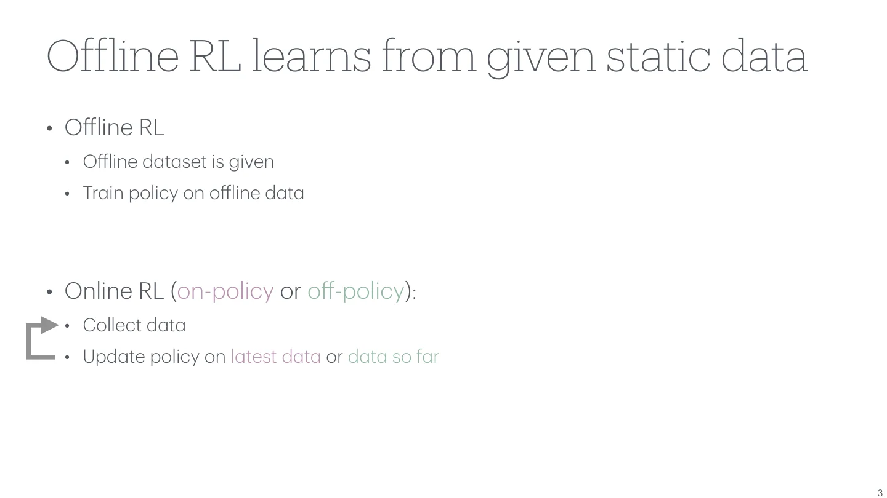<span class="zoom-hint">확대해서 보기 ↗</span></button><figcaption>슬라이드 03</figcaption></figure><div class="explanation"><div class="slide-reading"><p class="reading-kicker">Offline RL의 정의와 필요 · 슬라이드 03</p><p>offline RL은 고정 데이터셋으로 학습하고 새 전이를 수집하지 않습니다. 데이터 생성 정책은 알려져 있지 않거나 여러 정책의 혼합일 수 있습니다.</p><details><summary>개념 전개 펼치기</summary><p>offline은 데이터를 새로 수집하지 않고 고정 데이터로 학습한다는 뜻이다. on-policy/off-policy는 target policy와 behavior policy의 관계를 가리키며, online/offline은 환경 상호작용 여부를 가리킨다. 이 두 분류 축을 혼동하지 않는다. dataset에 성공·실패, 상태 coverage, 행동 품질이 어떤 비율로 들어 있는지 먼저 감사한다.</p>
</details></div></div></div></section><section class="slide" id="s04"><div class="slide-heading"><span class="slide-index">06 / 04</span><h2>Offline RL learns from given static data</h2></div><div class="slide-grid"><figure class="slide-figure"><button class="slide-image-button" data-zoom-src="../assets/slides/06_offline_rl/04.webp" data-zoom-label="06장 슬라이드 04">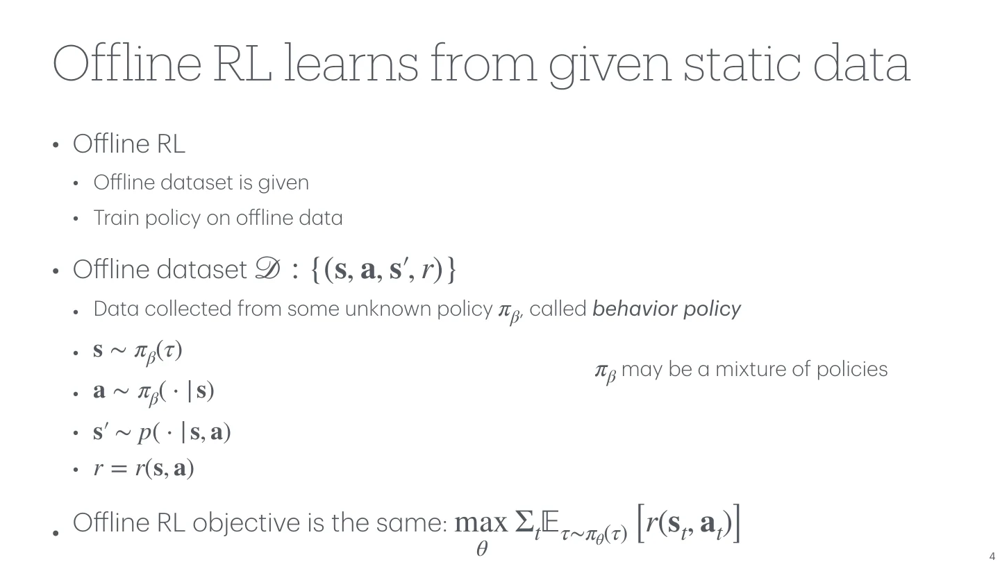<span class="zoom-hint">확대해서 보기 ↗</span></button><figcaption>슬라이드 04</figcaption></figure><div class="explanation"><div class="slide-reading"><p class="reading-kicker">Offline RL의 정의와 필요 · 슬라이드 04</p><p>offline RL은 고정 데이터셋으로 학습하고 새 전이를 수집하지 않습니다. 데이터 생성 정책은 알려져 있지 않거나 여러 정책의 혼합일 수 있습니다.</p><details><summary>개념 전개 펼치기</summary><p>offline은 데이터를 새로 수집하지 않고 고정 데이터로 학습한다는 뜻이다. on-policy/off-policy는 target policy와 behavior policy의 관계를 가리키며, online/offline은 환경 상호작용 여부를 가리킨다. 이 두 분류 축을 혼동하지 않는다. dataset에 성공·실패, 상태 coverage, 행동 품질이 어떤 비율로 들어 있는지 먼저 감사한다.</p>
</details></div></div></div></section><section class="slide" id="s05"><div class="slide-heading"><span class="slide-index">06 / 05</span><h2>How is offline RL different from BC?</h2></div><div class="slide-grid"><figure class="slide-figure"><button class="slide-image-button" data-zoom-src="../assets/slides/06_offline_rl/05.webp" data-zoom-label="06장 슬라이드 05">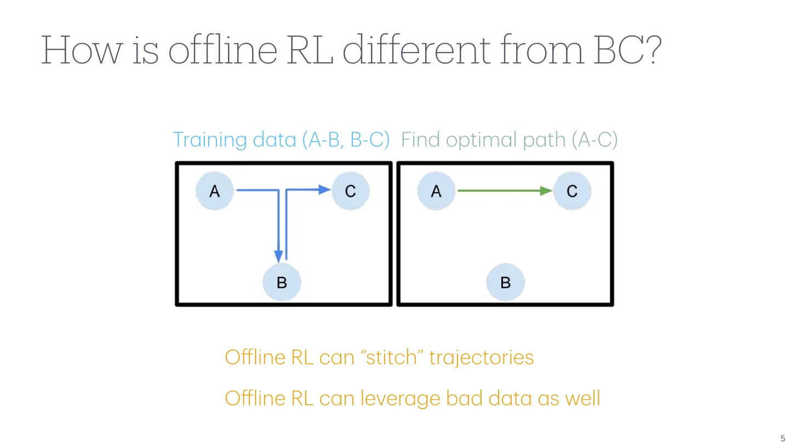<span class="zoom-hint">확대해서 보기 ↗</span></button><figcaption>슬라이드 05</figcaption></figure><div class="explanation"><div class="slide-reading"><p class="reading-kicker">Offline RL의 정의와 필요 · 슬라이드 05</p><p>BC는 데이터 행동을 따라 하고 offline RL은 보상으로 더 좋은 행동을 찾으려 합니다. 후자는 데이터 밖 행동을 평가해야 하므로 훨씬 어려운 외삽 문제가 생깁니다.</p><details><summary>개념 전개 펼치기</summary><p>offline은 데이터를 새로 수집하지 않고 고정 데이터로 학습한다는 뜻이다. on-policy/off-policy는 target policy와 behavior policy의 관계를 가리키며, online/offline은 환경 상호작용 여부를 가리킨다. 이 두 분류 축을 혼동하지 않는다. dataset에 성공·실패, 상태 coverage, 행동 품질이 어떤 비율로 들어 있는지 먼저 감사한다.</p>
</details></div><figure class="concept-figure">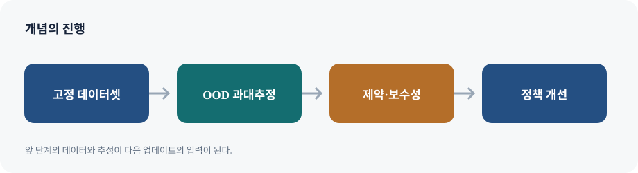<figcaption>Offline RL: 정적 데이터에서 정책 개선의 핵심 구조</figcaption></figure></div></div></section><section class="slide" id="s06"><div class="slide-heading"><span class="slide-index">06 / 06</span><h2>Why is offline RL hard?</h2></div><div class="slide-grid"><figure class="slide-figure"><button class="slide-image-button" data-zoom-src="../assets/slides/06_offline_rl/06.webp" data-zoom-label="06장 슬라이드 06"><span class="zoom-hint">확대해서 보기 ↗</span></button><figcaption>슬라이드 06</figcaption></figure><div class="explanation"><div class="slide-reading"><p class="reading-kicker">Offline RL의 정의와 필요 · 슬라이드 06</p><p>학습 데이터에 없는 행동의 Q값은 직접 검증할 수 없지만 max 연산은 그중 낙관적인 값을 선택할 수 있습니다. bootstrap이 반복되며 그 오류가 전파됩니다.</p><details><summary>개념 전개 펼치기</summary><p>offline은 데이터를 새로 수집하지 않고 고정 데이터로 학습한다는 뜻이다. on-policy/off-policy는 target policy와 behavior policy의 관계를 가리키며, online/offline은 환경 상호작용 여부를 가리킨다. 이 두 분류 축을 혼동하지 않는다. dataset에 성공·실패, 상태 coverage, 행동 품질이 어떤 비율로 들어 있는지 먼저 감사한다.</p>
</details></div></div></div></section><section class="slide" id="s07"><div class="slide-heading"><span class="slide-index">06 / 07</span><h2>Why, or when, might offline RL be useful?</h2></div><div class="slide-grid"><figure class="slide-figure"><button class="slide-image-button" data-zoom-src="../assets/slides/06_offline_rl/07.webp" data-zoom-label="06장 슬라이드 07">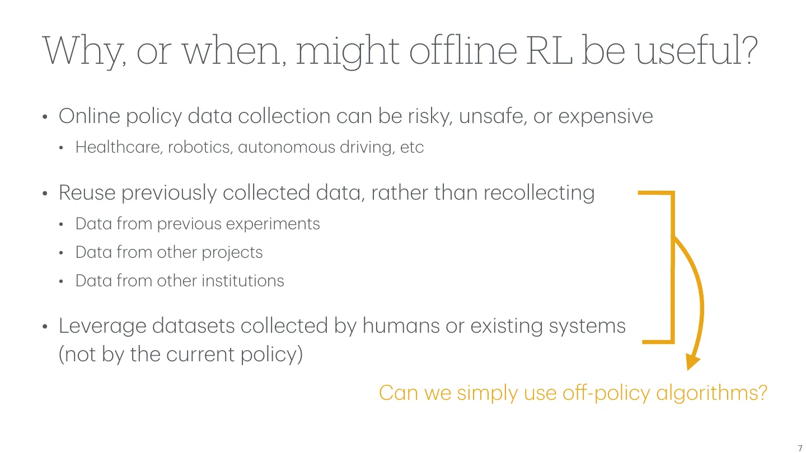<span class="zoom-hint">확대해서 보기 ↗</span></button><figcaption>슬라이드 07</figcaption></figure><div class="explanation"><div class="slide-reading"><p class="reading-kicker">Offline RL의 정의와 필요 · 슬라이드 07</p><p>질문형 제목에 답할 때 가정과 실패 모드를 먼저 적고, 다음 페이지의 해결책이 어떤 문제를 줄이는지 비교합니다.</p><details><summary>개념 전개 펼치기</summary><p>offline은 데이터를 새로 수집하지 않고 고정 데이터로 학습한다는 뜻이다. on-policy/off-policy는 target policy와 behavior policy의 관계를 가리키며, online/offline은 환경 상호작용 여부를 가리킨다. 이 두 분류 축을 혼동하지 않는다. dataset에 성공·실패, 상태 coverage, 행동 품질이 어떤 비율로 들어 있는지 먼저 감사한다.</p>
</details></div></div></div></section><section class="slide" id="s08"><div class="slide-heading"><span class="slide-index">06 / 08</span><h2>Can we simply use off-policy algorithms?</h2></div><div class="slide-grid"><figure class="slide-figure"><button class="slide-image-button" data-zoom-src="../assets/slides/06_offline_rl/08.webp" data-zoom-label="06장 슬라이드 08">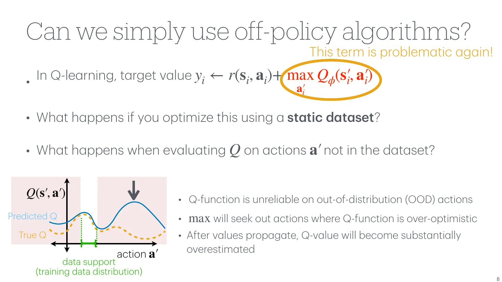<span class="zoom-hint">확대해서 보기 ↗</span></button><figcaption>슬라이드 08</figcaption></figure><div class="explanation"><div class="slide-reading"><p class="reading-kicker">분포 이동과 부트스트랩 오류 · 슬라이드 08</p><p>학습 데이터에 없는 행동의 Q값은 직접 검증할 수 없지만 max 연산은 그중 낙관적인 값을 선택할 수 있습니다. bootstrap이 반복되며 그 오류가 전파됩니다.</p><details><summary>개념 전개 펼치기</summary><p>OOD는 입력이 단순히 숫자상 극단이라는 뜻이 아니라 학습 데이터 분포의 support에서 벗어났다는 뜻이다. max Q는 신뢰할 수 없는 후보 중 큰 추정치를 고른다. 그 값이 Bellman target에 반복 투입되면 값 오류가 연쇄적으로 확산된다.</p>
</details></div></div></div></section><section class="slide" id="s09"><div class="slide-heading"><span class="slide-index">06 / 09</span><h2>Can we simply use off-policy algorithms?</h2></div><div class="slide-grid"><figure class="slide-figure"><button class="slide-image-button" data-zoom-src="../assets/slides/06_offline_rl/09.webp" data-zoom-label="06장 슬라이드 09">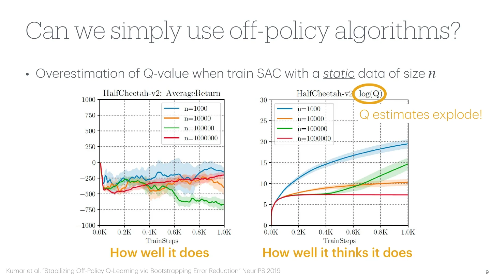<span class="zoom-hint">확대해서 보기 ↗</span></button><figcaption>슬라이드 09</figcaption></figure><div class="explanation"><div class="slide-reading"><p class="reading-kicker">분포 이동과 부트스트랩 오류 · 슬라이드 09</p><p>학습 데이터에 없는 행동의 Q값은 직접 검증할 수 없지만 max 연산은 그중 낙관적인 값을 선택할 수 있습니다. bootstrap이 반복되며 그 오류가 전파됩니다.</p><details><summary>개념 전개 펼치기</summary><p>OOD는 입력이 단순히 숫자상 극단이라는 뜻이 아니라 학습 데이터 분포의 support에서 벗어났다는 뜻이다. max Q는 신뢰할 수 없는 후보 중 큰 추정치를 고른다. 그 값이 Bellman target에 반복 투입되면 값 오류가 연쇄적으로 확산된다.</p>
</details></div></div></div></section><section class="slide" id="s10"><div class="slide-heading"><span class="slide-index">06 / 10</span><h2>Summary of offline RL</h2></div><div class="slide-grid"><figure class="slide-figure"><button class="slide-image-button" data-zoom-src="../assets/slides/06_offline_rl/10.webp" data-zoom-label="06장 슬라이드 10">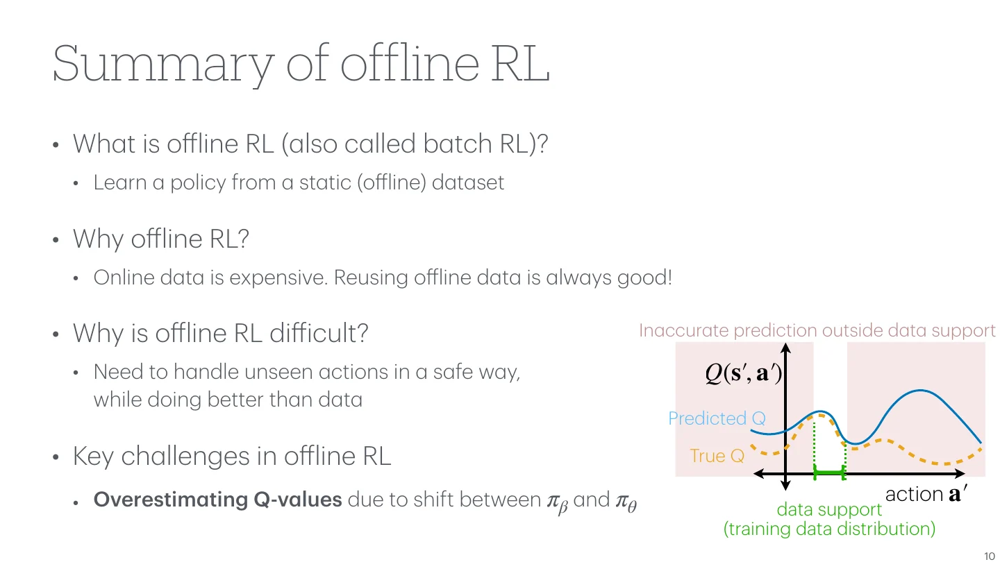<span class="zoom-hint">확대해서 보기 ↗</span></button><figcaption>슬라이드 10</figcaption></figure><div class="explanation"><div class="slide-reading"><p class="reading-kicker">분포 이동과 부트스트랩 오류 · 슬라이드 10</p><p>요약의 항목을 정의·목적함수·데이터 요구량·주요 실패 원인으로 나누어 정리합니다. 이름이 비슷한 알고리즘의 차이는 이 네 축에서 드러납니다.</p><details><summary>개념 전개 펼치기</summary><p>OOD는 입력이 단순히 숫자상 극단이라는 뜻이 아니라 학습 데이터 분포의 support에서 벗어났다는 뜻이다. max Q는 신뢰할 수 없는 후보 중 큰 추정치를 고른다. 그 값이 Bellman target에 반복 투입되면 값 오류가 연쇄적으로 확산된다.</p>
</details></div></div></div></section><section class="slide" id="s11"><div class="slide-heading"><span class="slide-index">06 / 11</span><h2>How to mitigate overestimation</h2></div><div class="slide-grid"><figure class="slide-figure"><button class="slide-image-button" data-zoom-src="../assets/slides/06_offline_rl/11.webp" data-zoom-label="06장 슬라이드 11">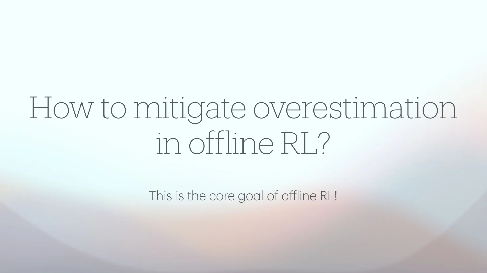<span class="zoom-hint">확대해서 보기 ↗</span></button><figcaption>슬라이드 11</figcaption></figure><div class="explanation"><div class="slide-reading"><p class="reading-kicker">TD3+BC: 정책 제약 · 슬라이드 11</p><p>슬라이드의 정의와 그림을 바로 앞·뒤 페이지의 식과 연결합니다. 기호의 조건부 대상, 학습 데이터가 온 정책, 그리고 업데이트에서 고정된 값이 무엇인지 표시해 보세요.</p><details><summary>개념 전개 펼치기</summary><p>행동 복제 항과 Q 최대화 항의 가중합으로 actor를 갱신해 데이터 행동에서 너무 멀어지지 않게 한다. Q 항의 scale을 정규화하는 이유는 보상 단위가 BC와 RL 항의 상대 가중을 임의로 바꾸지 않도록 하기 위해서다. 데이터가 낮은 품질이면 강한 복제가 개선을 막을 수 있다.</p>
</details></div></div></div></section><section class="slide" id="s12"><div class="slide-heading"><span class="slide-index">06 / 12</span><h2>1. Constrain a to stay close to behavior policy</h2></div><div class="slide-grid"><figure class="slide-figure"><button class="slide-image-button" data-zoom-src="../assets/slides/06_offline_rl/12.webp" data-zoom-label="06장 슬라이드 12">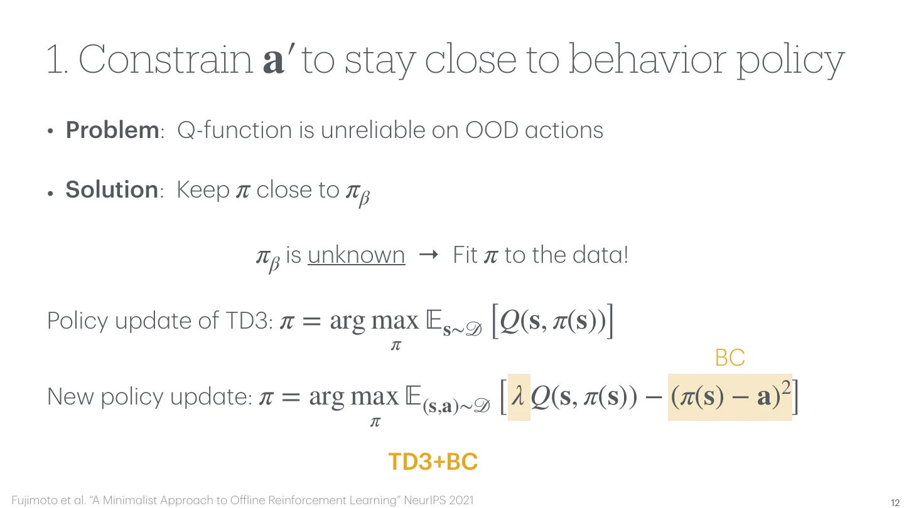<span class="zoom-hint">확대해서 보기 ↗</span></button><figcaption>슬라이드 12</figcaption></figure><div class="explanation"><div class="slide-reading"><p class="reading-kicker">TD3+BC: 정책 제약 · 슬라이드 12</p><p>TD3+BC는 actor 목적에 행동 복제 항을 더해 데이터 행동에서의 이탈을 억제합니다. 데이터 품질이 낮으면 제약이 정책 개선도 막을 수 있습니다.</p><details><summary>개념 전개 펼치기</summary><p>행동 복제 항과 Q 최대화 항의 가중합으로 actor를 갱신해 데이터 행동에서 너무 멀어지지 않게 한다. Q 항의 scale을 정규화하는 이유는 보상 단위가 BC와 RL 항의 상대 가중을 임의로 바꾸지 않도록 하기 위해서다. 데이터가 낮은 품질이면 강한 복제가 개선을 막을 수 있다.</p>
</details></div></div></div></section><section class="slide" id="s13"><div class="slide-heading"><span class="slide-index">06 / 13</span><h2>2. Conservative Q estimation</h2></div><div class="slide-grid"><figure class="slide-figure"><button class="slide-image-button" data-zoom-src="../assets/slides/06_offline_rl/13.webp" data-zoom-label="06장 슬라이드 13">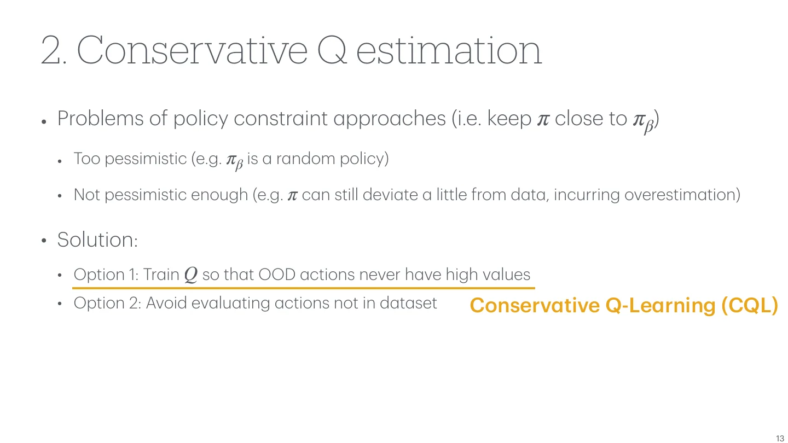<span class="zoom-hint">확대해서 보기 ↗</span></button><figcaption>슬라이드 13</figcaption></figure><div class="explanation"><div class="slide-reading"><p class="reading-kicker">CQL: 보수적 Q 추정 · 슬라이드 13</p><p>CQL은 데이터 행동의 값은 보존하면서 후보 행동의 높은 Q를 낮춰 낙관적 외삽을 억제합니다. 보수성 계수가 지나치면 유망한 행동까지 억누릅니다.</p><details><summary>개념 전개 펼치기</summary><p>CQL은 데이터 행동의 Q는 맞추고, 상태에서 표본화한 후보 행동의 Q는 보수적으로 낮춘다. log-sum-exp는 큰 후보 Q에 큰 가중을 주는 smooth maximum이다. 정규화 강도는 낙관성 억제와 유용한 정책 개선 사이를 조절한다. 이론적 하한 성질은 특정 가정과 설정 아래 성립하며 임의의 함수근사·데이터에서 자동 보장되는 것은 아니다.</p>
</details></div></div></div></section><section class="slide" id="s14"><div class="slide-heading"><span class="slide-index">06 / 14</span><h2>Learning conservative Q-functions</h2></div><div class="slide-grid"><figure class="slide-figure"><button class="slide-image-button" data-zoom-src="../assets/slides/06_offline_rl/14.webp" data-zoom-label="06장 슬라이드 14">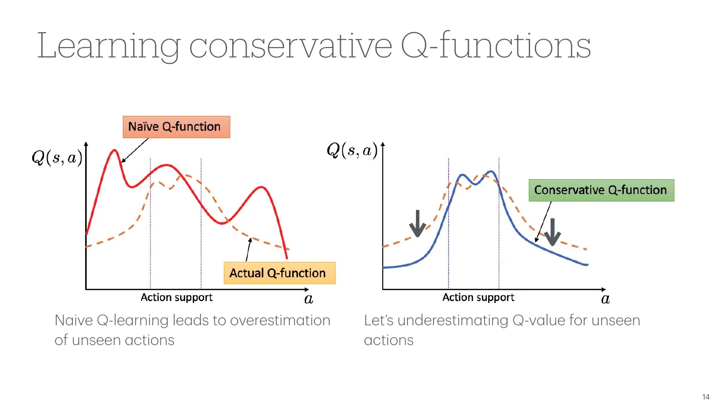<span class="zoom-hint">확대해서 보기 ↗</span></button><figcaption>슬라이드 14</figcaption></figure><div class="explanation"><div class="slide-reading"><p class="reading-kicker">CQL: 보수적 Q 추정 · 슬라이드 14</p><p>CQL은 데이터 행동의 값은 보존하면서 후보 행동의 높은 Q를 낮춰 낙관적 외삽을 억제합니다. 보수성 계수가 지나치면 유망한 행동까지 억누릅니다.</p><details><summary>개념 전개 펼치기</summary><p>CQL은 데이터 행동의 Q는 맞추고, 상태에서 표본화한 후보 행동의 Q는 보수적으로 낮춘다. log-sum-exp는 큰 후보 Q에 큰 가중을 주는 smooth maximum이다. 정규화 강도는 낙관성 억제와 유용한 정책 개선 사이를 조절한다. 이론적 하한 성질은 특정 가정과 설정 아래 성립하며 임의의 함수근사·데이터에서 자동 보장되는 것은 아니다.</p>
</details></div></div></div></section><section class="slide" id="s15"><div class="slide-heading"><span class="slide-index">06 / 15</span><h2>Conservative Q-Learning (CQL)</h2></div><div class="slide-grid"><figure class="slide-figure"><button class="slide-image-button" data-zoom-src="../assets/slides/06_offline_rl/15.webp" data-zoom-label="06장 슬라이드 15">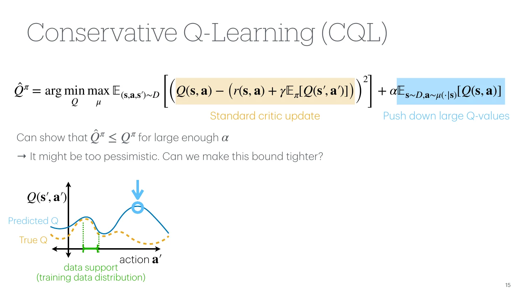<span class="zoom-hint">확대해서 보기 ↗</span></button><figcaption>슬라이드 15</figcaption></figure><div class="explanation"><div class="slide-reading"><p class="reading-kicker">CQL: 보수적 Q 추정 · 슬라이드 15</p><p>CQL은 데이터 행동의 값은 보존하면서 후보 행동의 높은 Q를 낮춰 낙관적 외삽을 억제합니다. 보수성 계수가 지나치면 유망한 행동까지 억누릅니다.</p><details><summary>개념 전개 펼치기</summary><p>CQL은 데이터 행동의 Q는 맞추고, 상태에서 표본화한 후보 행동의 Q는 보수적으로 낮춘다. log-sum-exp는 큰 후보 Q에 큰 가중을 주는 smooth maximum이다. 정규화 강도는 낙관성 억제와 유용한 정책 개선 사이를 조절한다. 이론적 하한 성질은 특정 가정과 설정 아래 성립하며 임의의 함수근사·데이터에서 자동 보장되는 것은 아니다.</p>
</details></div></div></div></section><section class="slide" id="s16"><div class="slide-heading"><span class="slide-index">06 / 16</span><h2>Conservative Q-Learning (CQL)</h2></div><div class="slide-grid"><figure class="slide-figure"><button class="slide-image-button" data-zoom-src="../assets/slides/06_offline_rl/16.webp" data-zoom-label="06장 슬라이드 16">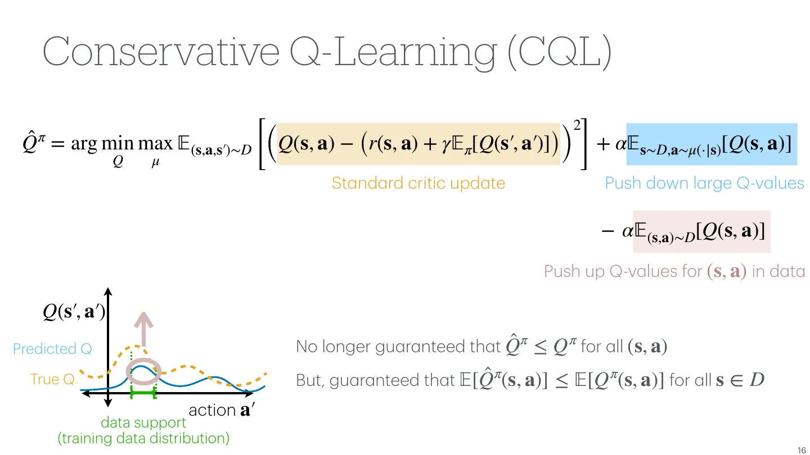<span class="zoom-hint">확대해서 보기 ↗</span></button><figcaption>슬라이드 16</figcaption></figure><div class="explanation"><div class="slide-reading"><p class="reading-kicker">CQL: 보수적 Q 추정 · 슬라이드 16</p><p>CQL은 데이터 행동의 값은 보존하면서 후보 행동의 높은 Q를 낮춰 낙관적 외삽을 억제합니다. 보수성 계수가 지나치면 유망한 행동까지 억누릅니다.</p><details><summary>개념 전개 펼치기</summary><p>CQL은 데이터 행동의 Q는 맞추고, 상태에서 표본화한 후보 행동의 Q는 보수적으로 낮춘다. log-sum-exp는 큰 후보 Q에 큰 가중을 주는 smooth maximum이다. 정규화 강도는 낙관성 억제와 유용한 정책 개선 사이를 조절한다. 이론적 하한 성질은 특정 가정과 설정 아래 성립하며 임의의 함수근사·데이터에서 자동 보장되는 것은 아니다.</p>
</details></div></div></div></section><section class="slide" id="s17"><div class="slide-heading"><span class="slide-index">06 / 17</span><h2>Conservative Q-Learning (CQL)</h2></div><div class="slide-grid"><figure class="slide-figure"><button class="slide-image-button" data-zoom-src="../assets/slides/06_offline_rl/17.webp" data-zoom-label="06장 슬라이드 17"><span class="zoom-hint">확대해서 보기 ↗</span></button><figcaption>슬라이드 17</figcaption></figure><div class="explanation"><div class="slide-reading"><p class="reading-kicker">CQL: 보수적 Q 추정 · 슬라이드 17</p><p>CQL은 데이터 행동의 값은 보존하면서 후보 행동의 높은 Q를 낮춰 낙관적 외삽을 억제합니다. 보수성 계수가 지나치면 유망한 행동까지 억누릅니다.</p><details><summary>개념 전개 펼치기</summary><p>CQL은 데이터 행동의 Q는 맞추고, 상태에서 표본화한 후보 행동의 Q는 보수적으로 낮춘다. log-sum-exp는 큰 후보 Q에 큰 가중을 주는 smooth maximum이다. 정규화 강도는 낙관성 억제와 유용한 정책 개선 사이를 조절한다. 이론적 하한 성질은 특정 가정과 설정 아래 성립하며 임의의 함수근사·데이터에서 자동 보장되는 것은 아니다.</p>
</details></div></div></div></section><section class="slide" id="s18"><div class="slide-heading"><span class="slide-index">06 / 18</span><h2>Conservative Q-Learning (CQL)</h2></div><div class="slide-grid"><figure class="slide-figure"><button class="slide-image-button" data-zoom-src="../assets/slides/06_offline_rl/18.webp" data-zoom-label="06장 슬라이드 18">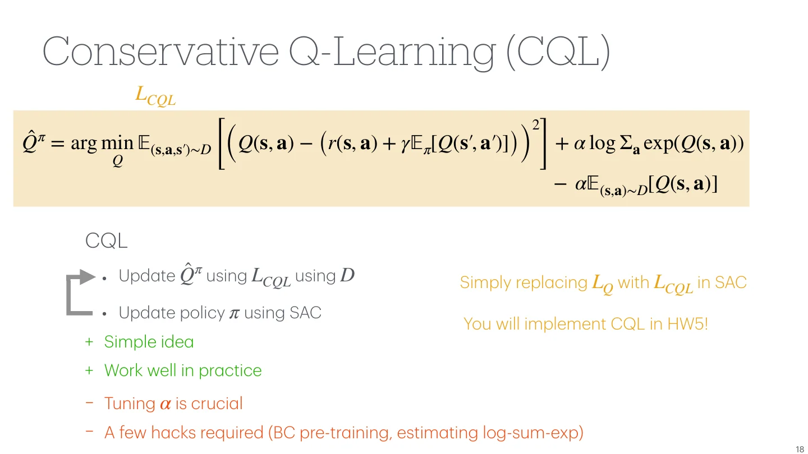<span class="zoom-hint">확대해서 보기 ↗</span></button><figcaption>슬라이드 18</figcaption></figure><div class="explanation"><div class="slide-reading"><p class="reading-kicker">CQL: 보수적 Q 추정 · 슬라이드 18</p><p>CQL은 데이터 행동의 값은 보존하면서 후보 행동의 높은 Q를 낮춰 낙관적 외삽을 억제합니다. 보수성 계수가 지나치면 유망한 행동까지 억누릅니다.</p><details><summary>개념 전개 펼치기</summary><p>CQL은 데이터 행동의 Q는 맞추고, 상태에서 표본화한 후보 행동의 Q는 보수적으로 낮춘다. log-sum-exp는 큰 후보 Q에 큰 가중을 주는 smooth maximum이다. 정규화 강도는 낙관성 억제와 유용한 정책 개선 사이를 조절한다. 이론적 하한 성질은 특정 가정과 설정 아래 성립하며 임의의 함수근사·데이터에서 자동 보장되는 것은 아니다.</p>
</details></div></div></div></section><section class="slide" id="s19"><div class="slide-heading"><span class="slide-index">06 / 19</span><h2>How to evaluate offline RL?</h2></div><div class="slide-grid"><figure class="slide-figure"><button class="slide-image-button" data-zoom-src="../assets/slides/06_offline_rl/19.webp" data-zoom-label="06장 슬라이드 19">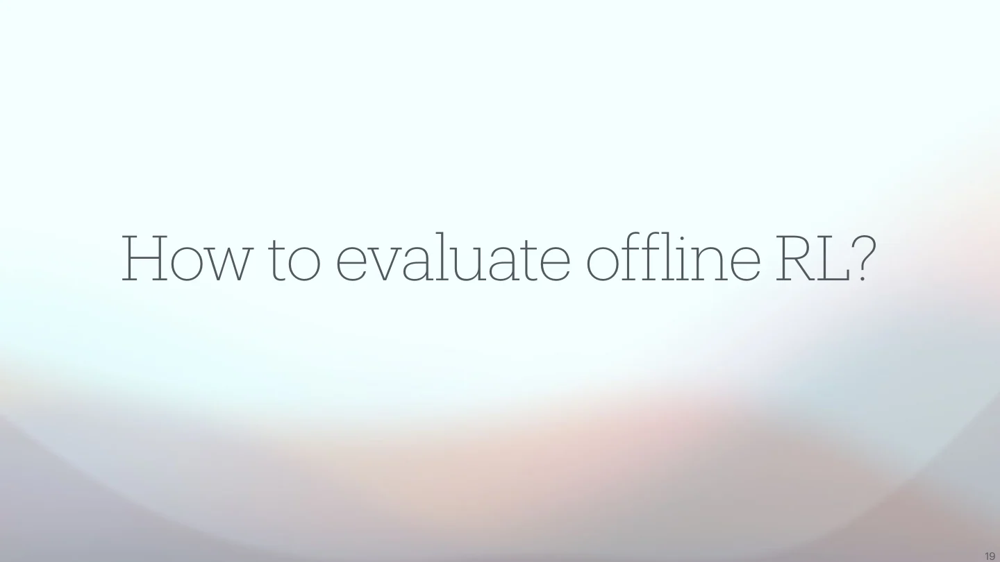<span class="zoom-hint">확대해서 보기 ↗</span></button><figcaption>슬라이드 19</figcaption></figure><div class="explanation"><div class="slide-reading"><p class="reading-kicker">Offline RL 평가와 OOD 행동 · 슬라이드 19</p><p>슬라이드의 정의와 그림을 바로 앞·뒤 페이지의 식과 연결합니다. 기호의 조건부 대상, 학습 데이터가 온 정책, 그리고 업데이트에서 고정된 값이 무엇인지 표시해 보세요.</p><details><summary>개념 전개 펼치기</summary><p>D4RL과 OGBench는 데이터 품질·coverage·목표 구조가 다른 오프라인 과업을 비교한다. 데이터에 없는 행동에서 Q가 얼마나 잘 맞는지는 직접 정답을 알기 어렵다. 높은 offline return 예측치만 보고 성공을 선언하지 말고 normalized score, 여러 데이터 regime, online fine-tuning 가능 여부와 재현성을 함께 본다.</p>
</details></div></div></div></section><section class="slide" id="s20"><div class="slide-heading"><span class="slide-index">06 / 20</span><h2>How do we evaluate offline RL methods?</h2></div><div class="slide-grid"><figure class="slide-figure"><button class="slide-image-button" data-zoom-src="../assets/slides/06_offline_rl/20.webp" data-zoom-label="06장 슬라이드 20">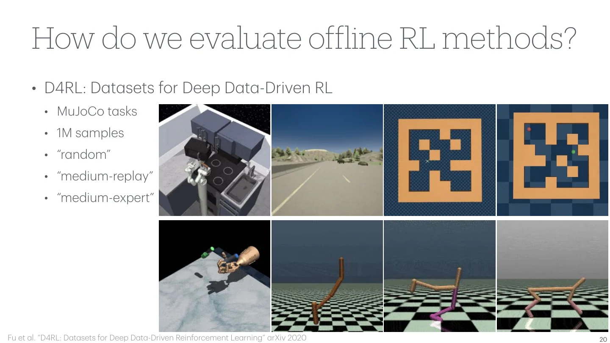<span class="zoom-hint">확대해서 보기 ↗</span></button><figcaption>슬라이드 20</figcaption></figure><div class="explanation"><div class="slide-reading"><p class="reading-kicker">Offline RL 평가와 OOD 행동 · 슬라이드 20</p><p>슬라이드의 정의와 그림을 바로 앞·뒤 페이지의 식과 연결합니다. 기호의 조건부 대상, 학습 데이터가 온 정책, 그리고 업데이트에서 고정된 값이 무엇인지 표시해 보세요.</p><details><summary>개념 전개 펼치기</summary><p>D4RL과 OGBench는 데이터 품질·coverage·목표 구조가 다른 오프라인 과업을 비교한다. 데이터에 없는 행동에서 Q가 얼마나 잘 맞는지는 직접 정답을 알기 어렵다. 높은 offline return 예측치만 보고 성공을 선언하지 말고 normalized score, 여러 데이터 regime, online fine-tuning 가능 여부와 재현성을 함께 본다.</p>
</details></div></div></div></section><section class="slide" id="s21"><div class="slide-heading"><span class="slide-index">06 / 21</span><h2>Offline benchmark examples</h2></div><div class="slide-grid"><figure class="slide-figure"><button class="slide-image-button" data-zoom-src="../assets/slides/06_offline_rl/21.webp" data-zoom-label="06장 슬라이드 21"><span class="zoom-hint">확대해서 보기 ↗</span></button><figcaption>슬라이드 21</figcaption></figure><div class="explanation"><div class="slide-reading"><p class="reading-kicker">Offline RL 평가와 OOD 행동 · 슬라이드 21</p><p>예시를 정책과 환경의 관점으로 다시 적습니다. 관측 상태, 선택 행동, 전이 확률, 보상 시점, 종료 여부를 분리하면 뒤의 수식을 같은 표기로 계산할 수 있습니다.</p><details><summary>개념 전개 펼치기</summary><p>D4RL과 OGBench는 데이터 품질·coverage·목표 구조가 다른 오프라인 과업을 비교한다. 데이터에 없는 행동에서 Q가 얼마나 잘 맞는지는 직접 정답을 알기 어렵다. 높은 offline return 예측치만 보고 성공을 선언하지 말고 normalized score, 여러 데이터 regime, online fine-tuning 가능 여부와 재현성을 함께 본다.</p>
</details></div></div></div></section><section class="slide" id="s22"><div class="slide-heading"><span class="slide-index">06 / 22</span><h2>How do we evaluate offline RL methods?</h2></div><div class="slide-grid"><figure class="slide-figure"><button class="slide-image-button" data-zoom-src="../assets/slides/06_offline_rl/22.webp" data-zoom-label="06장 슬라이드 22">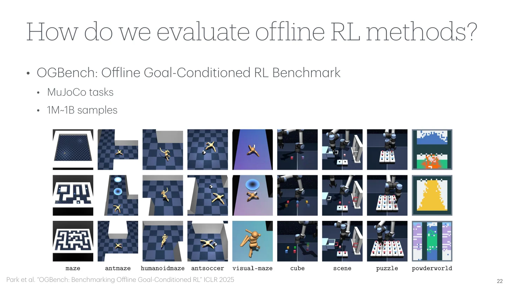<span class="zoom-hint">확대해서 보기 ↗</span></button><figcaption>슬라이드 22</figcaption></figure><div class="explanation"><div class="slide-reading"><p class="reading-kicker">Offline RL 평가와 OOD 행동 · 슬라이드 22</p><p>슬라이드의 정의와 그림을 바로 앞·뒤 페이지의 식과 연결합니다. 기호의 조건부 대상, 학습 데이터가 온 정책, 그리고 업데이트에서 고정된 값이 무엇인지 표시해 보세요.</p><details><summary>개념 전개 펼치기</summary><p>D4RL과 OGBench는 데이터 품질·coverage·목표 구조가 다른 오프라인 과업을 비교한다. 데이터에 없는 행동에서 Q가 얼마나 잘 맞는지는 직접 정답을 알기 어렵다. 높은 offline return 예측치만 보고 성공을 선언하지 말고 normalized score, 여러 데이터 regime, online fine-tuning 가능 여부와 재현성을 함께 본다.</p>
</details></div></div></div></section><section class="slide" id="s23"><div class="slide-heading"><span class="slide-index">06 / 23</span><h2>Summary of TD3+BC and CQL</h2></div><div class="slide-grid"><figure class="slide-figure"><button class="slide-image-button" data-zoom-src="../assets/slides/06_offline_rl/23.webp" data-zoom-label="06장 슬라이드 23">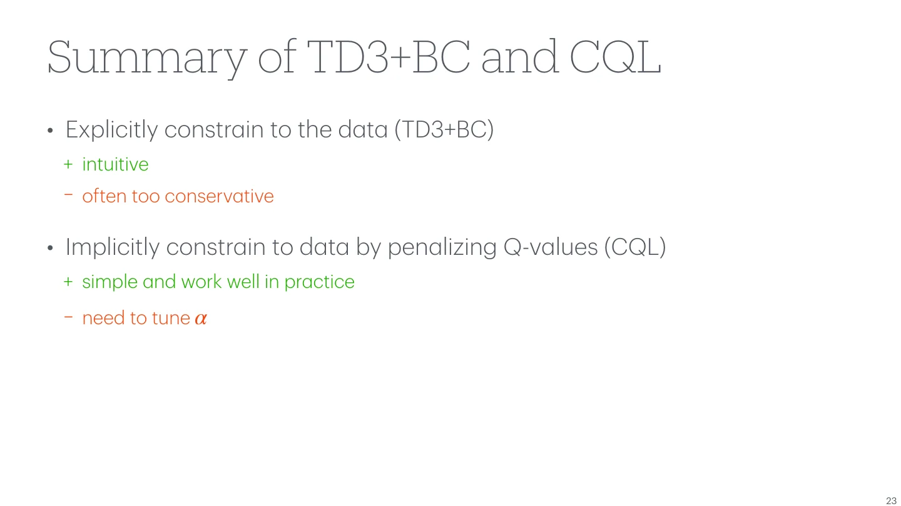<span class="zoom-hint">확대해서 보기 ↗</span></button><figcaption>슬라이드 23</figcaption></figure><div class="explanation"><div class="slide-reading"><p class="reading-kicker">Offline RL 평가와 OOD 행동 · 슬라이드 23</p><p>요약의 항목을 정의·목적함수·데이터 요구량·주요 실패 원인으로 나누어 정리합니다. 이름이 비슷한 알고리즘의 차이는 이 네 축에서 드러납니다.</p><details><summary>개념 전개 펼치기</summary><p>D4RL과 OGBench는 데이터 품질·coverage·목표 구조가 다른 오프라인 과업을 비교한다. 데이터에 없는 행동에서 Q가 얼마나 잘 맞는지는 직접 정답을 알기 어렵다. 높은 offline return 예측치만 보고 성공을 선언하지 말고 normalized score, 여러 데이터 regime, online fine-tuning 가능 여부와 재현성을 함께 본다.</p>
</details></div></div></div></section><section class="slide" id="s24"><div class="slide-heading"><span class="slide-index">06 / 24</span><h2>Q-function is still unreliable on</h2></div><div class="slide-grid"><figure class="slide-figure"><button class="slide-image-button" data-zoom-src="../assets/slides/06_offline_rl/24.webp" data-zoom-label="06장 슬라이드 24">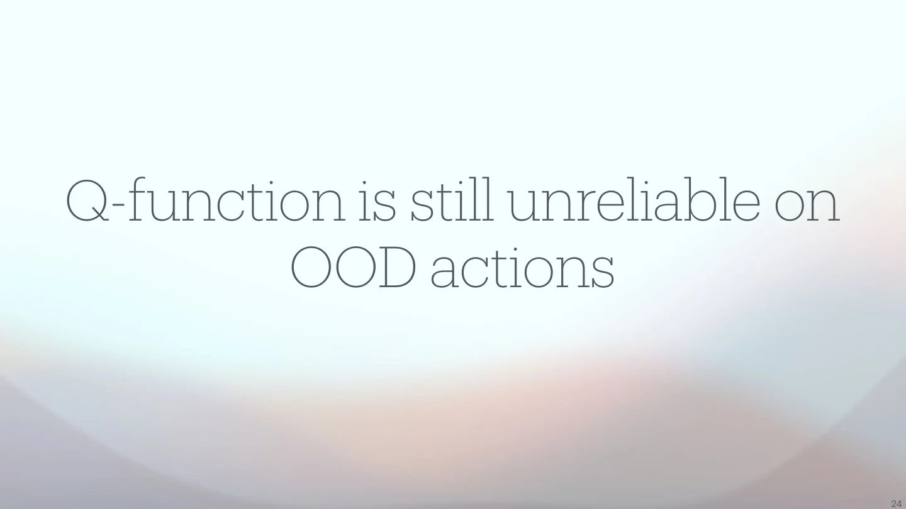<span class="zoom-hint">확대해서 보기 ↗</span></button><figcaption>슬라이드 24</figcaption></figure><div class="explanation"><div class="slide-reading"><p class="reading-kicker">Offline RL 평가와 OOD 행동 · 슬라이드 24</p><p>슬라이드의 정의와 그림을 바로 앞·뒤 페이지의 식과 연결합니다. 기호의 조건부 대상, 학습 데이터가 온 정책, 그리고 업데이트에서 고정된 값이 무엇인지 표시해 보세요.</p><details><summary>개념 전개 펼치기</summary><p>D4RL과 OGBench는 데이터 품질·coverage·목표 구조가 다른 오프라인 과업을 비교한다. 데이터에 없는 행동에서 Q가 얼마나 잘 맞는지는 직접 정답을 알기 어렵다. 높은 offline return 예측치만 보고 성공을 선언하지 말고 normalized score, 여러 데이터 regime, online fine-tuning 가능 여부와 재현성을 함께 본다.</p>
</details></div></div></div></section><section class="slide" id="s25"><div class="slide-heading"><span class="slide-index">06 / 25</span><h2>Q-function is unreliable on OOD actions</h2></div><div class="slide-grid"><figure class="slide-figure"><button class="slide-image-button" data-zoom-src="../assets/slides/06_offline_rl/25.webp" data-zoom-label="06장 슬라이드 25">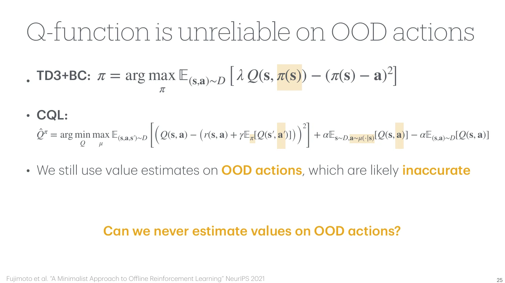<span class="zoom-hint">확대해서 보기 ↗</span></button><figcaption>슬라이드 25</figcaption></figure><div class="explanation"><div class="slide-reading"><p class="reading-kicker">Offline RL 평가와 OOD 행동 · 슬라이드 25</p><p>학습 데이터에 없는 행동의 Q값은 직접 검증할 수 없지만 max 연산은 그중 낙관적인 값을 선택할 수 있습니다. bootstrap이 반복되며 그 오류가 전파됩니다.</p><details><summary>개념 전개 펼치기</summary><p>D4RL과 OGBench는 데이터 품질·coverage·목표 구조가 다른 오프라인 과업을 비교한다. 데이터에 없는 행동에서 Q가 얼마나 잘 맞는지는 직접 정답을 알기 어렵다. 높은 offline return 예측치만 보고 성공을 선언하지 말고 normalized score, 여러 데이터 regime, online fine-tuning 가능 여부와 재현성을 함께 본다.</p>
</details></div></div></div></section><section class="slide" id="s26"><div class="slide-heading"><span class="slide-index">06 / 26</span><h2>Leveraging reward</h2></div><div class="slide-grid"><figure class="slide-figure"><button class="slide-image-button" data-zoom-src="../assets/slides/06_offline_rl/26.webp" data-zoom-label="06장 슬라이드 26"><span class="zoom-hint">확대해서 보기 ↗</span></button><figcaption>슬라이드 26</figcaption></figure><div class="explanation"><div class="slide-reading"><p class="reading-kicker">Filtered BC와 AWR · 슬라이드 26</p><p>슬라이드의 정의와 그림을 바로 앞·뒤 페이지의 식과 연결합니다. 기호의 조건부 대상, 학습 데이터가 온 정책, 그리고 업데이트에서 고정된 값이 무엇인지 표시해 보세요.</p><details><summary>개념 전개 펼치기</summary><p>Filtered BC는 trajectory return으로 상위 데이터를 고른 뒤 모방하므로 보상 크기 순위만 이용한다. AWR은 <span class="math-inline">\(\exp(A/eta)\)</span>로 transition별 log-likelihood를 가중해 상대적인 이득을 활용한다. 온도 <span class="math-inline">\(eta\)</span>가 작으면 상위 사례에 집중하지만 작은 추정오차에 민감해진다.</p>
</details></div></div></div></section><section class="slide" id="s27"><div class="slide-heading"><span class="slide-index">06 / 27</span><h2>Behavioral cloning with rewards</h2></div><div class="slide-grid"><figure class="slide-figure"><button class="slide-image-button" data-zoom-src="../assets/slides/06_offline_rl/27.webp" data-zoom-label="06장 슬라이드 27">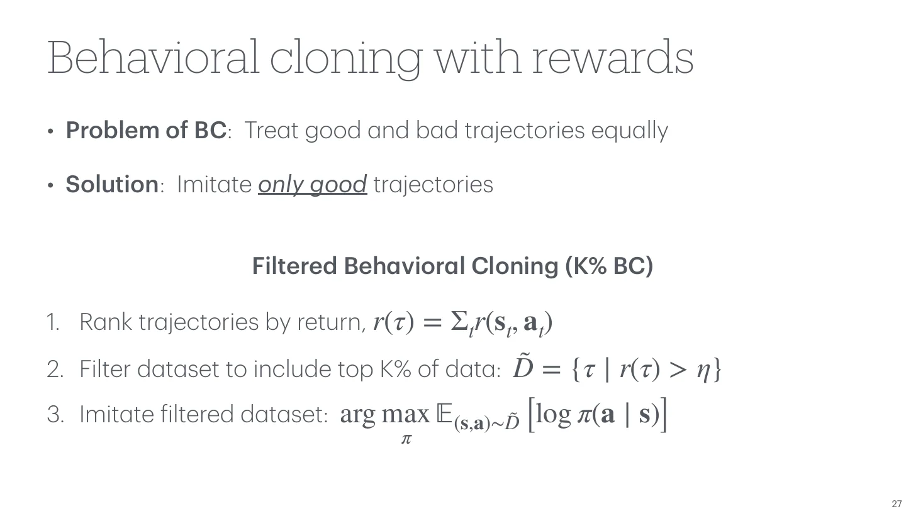<span class="zoom-hint">확대해서 보기 ↗</span></button><figcaption>슬라이드 27</figcaption></figure><div class="explanation"><div class="slide-reading"><p class="reading-kicker">Filtered BC와 AWR · 슬라이드 27</p><p>슬라이드의 정의와 그림을 바로 앞·뒤 페이지의 식과 연결합니다. 기호의 조건부 대상, 학습 데이터가 온 정책, 그리고 업데이트에서 고정된 값이 무엇인지 표시해 보세요.</p><details><summary>개념 전개 펼치기</summary><p>Filtered BC는 trajectory return으로 상위 데이터를 고른 뒤 모방하므로 보상 크기 순위만 이용한다. AWR은 <span class="math-inline">\(\exp(A/eta)\)</span>로 transition별 log-likelihood를 가중해 상대적인 이득을 활용한다. 온도 <span class="math-inline">\(eta\)</span>가 작으면 상위 사례에 집중하지만 작은 추정오차에 민감해진다.</p>
</details></div></div></div></section><section class="slide" id="s28"><div class="slide-heading"><span class="slide-index">06 / 28</span><h2>Behavioral cloning with advantage</h2></div><div class="slide-grid"><figure class="slide-figure"><button class="slide-image-button" data-zoom-src="../assets/slides/06_offline_rl/28.webp" data-zoom-label="06장 슬라이드 28">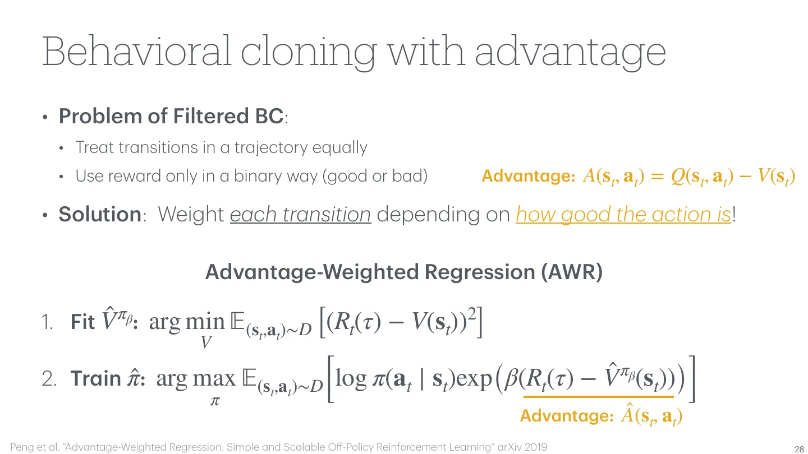<span class="zoom-hint">확대해서 보기 ↗</span></button><figcaption>슬라이드 28</figcaption></figure><div class="explanation"><div class="slide-reading"><p class="reading-kicker">Filtered BC와 AWR · 슬라이드 28</p><p>AWR은 advantage가 높은 전이에 더 큰 likelihood 가중치를 줍니다. 지수 가중 온도 β가 작으면 상위 샘플에 집중하지만 오차에도 민감합니다.</p><details><summary>개념 전개 펼치기</summary><p>Filtered BC는 trajectory return으로 상위 데이터를 고른 뒤 모방하므로 보상 크기 순위만 이용한다. AWR은 <span class="math-inline">\(\exp(A/eta)\)</span>로 transition별 log-likelihood를 가중해 상대적인 이득을 활용한다. 온도 <span class="math-inline">\(eta\)</span>가 작으면 상위 사례에 집중하지만 작은 추정오차에 민감해진다.</p>
</details></div></div></div></section><section class="slide" id="s29"><div class="slide-heading"><span class="slide-index">06 / 29</span><h2>Behavioral cloning with advantage</h2></div><div class="slide-grid"><figure class="slide-figure"><button class="slide-image-button" data-zoom-src="../assets/slides/06_offline_rl/29.webp" data-zoom-label="06장 슬라이드 29">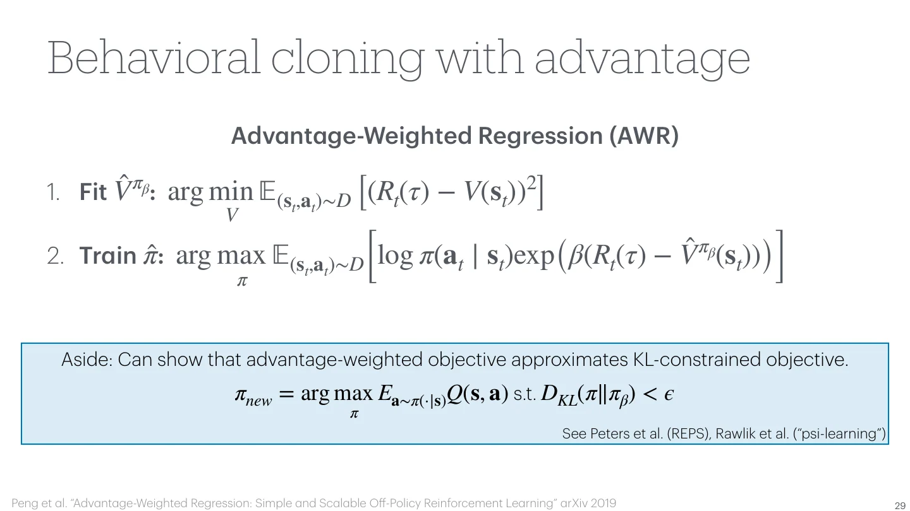<span class="zoom-hint">확대해서 보기 ↗</span></button><figcaption>슬라이드 29</figcaption></figure><div class="explanation"><div class="slide-reading"><p class="reading-kicker">Filtered BC와 AWR · 슬라이드 29</p><p>AWR은 advantage가 높은 전이에 더 큰 likelihood 가중치를 줍니다. 지수 가중 온도 β가 작으면 상위 샘플에 집중하지만 오차에도 민감합니다.</p><details><summary>개념 전개 펼치기</summary><p>Filtered BC는 trajectory return으로 상위 데이터를 고른 뒤 모방하므로 보상 크기 순위만 이용한다. AWR은 <span class="math-inline">\(\exp(A/eta)\)</span>로 transition별 log-likelihood를 가중해 상대적인 이득을 활용한다. 온도 <span class="math-inline">\(eta\)</span>가 작으면 상위 사례에 집중하지만 작은 추정오차에 민감해진다.</p>
</details></div></div></div></section><section class="slide" id="s30"><div class="slide-heading"><span class="slide-index">06 / 30</span><h2>Behavioral cloning with advantage</h2></div><div class="slide-grid"><figure class="slide-figure"><button class="slide-image-button" data-zoom-src="../assets/slides/06_offline_rl/30.webp" data-zoom-label="06장 슬라이드 30">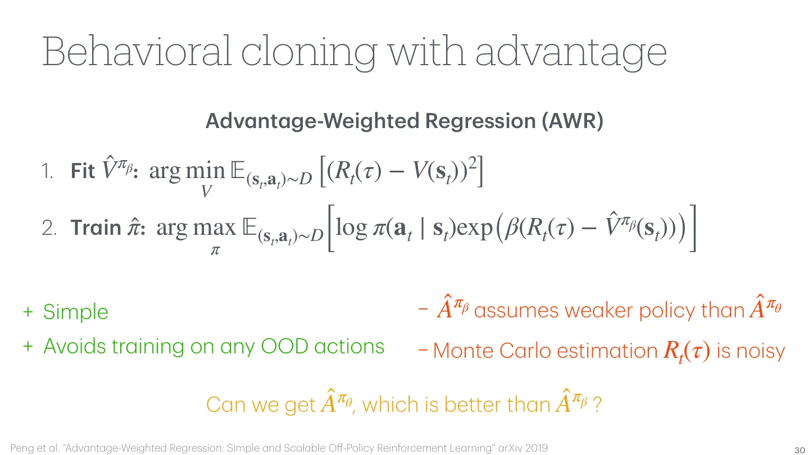<span class="zoom-hint">확대해서 보기 ↗</span></button><figcaption>슬라이드 30</figcaption></figure><div class="explanation"><div class="slide-reading"><p class="reading-kicker">Filtered BC와 AWR · 슬라이드 30</p><p>AWR은 advantage가 높은 전이에 더 큰 likelihood 가중치를 줍니다. 지수 가중 온도 β가 작으면 상위 샘플에 집중하지만 오차에도 민감합니다.</p><details><summary>개념 전개 펼치기</summary><p>Filtered BC는 trajectory return으로 상위 데이터를 고른 뒤 모방하므로 보상 크기 순위만 이용한다. AWR은 <span class="math-inline">\(\exp(A/eta)\)</span>로 transition별 log-likelihood를 가중해 상대적인 이득을 활용한다. 온도 <span class="math-inline">\(eta\)</span>가 작으면 상위 사례에 집중하지만 작은 추정오차에 민감해진다.</p>
</details></div></div></div></section><section class="slide" id="s31"><div class="slide-heading"><span class="slide-index">06 / 31</span><h2>Q-learning without estimating OOD actions</h2></div><div class="slide-grid"><figure class="slide-figure"><button class="slide-image-button" data-zoom-src="../assets/slides/06_offline_rl/31.webp" data-zoom-label="06장 슬라이드 31"><span class="zoom-hint">확대해서 보기 ↗</span></button><figcaption>슬라이드 31</figcaption></figure><div class="explanation"><div class="slide-reading"><p class="reading-kicker">IQL과 expectile 회귀 · 슬라이드 31</p><p>학습 데이터에 없는 행동의 Q값은 직접 검증할 수 없지만 max 연산은 그중 낙관적인 값을 선택할 수 있습니다. bootstrap이 반복되며 그 오류가 전파됩니다.</p><details><summary>개념 전개 펼치기</summary><p>SARSA식 target은 데이터에 저장된 다음 행동을 사용해 greedy OOD 행동을 평가하지 않는다. IQL의 expectile 손실은 잔차 <span class="math-inline">\(u=Q-V\)</span>의 부호에 따라 <span class="math-inline">\(	au u^2\)</span> 또는 <span class="math-inline">\((1-	au)u^2\)</span>를 적용한다. <span class="math-inline">\(	au&gt;0.5\)</span>면 높은 Q 표본이 V를 위쪽으로 끌어올리고, advantage weight가 큰 데이터 행동을 정책이 더 잘 모방한다.</p>
</details></div></div></div></section><section class="slide" id="s32"><div class="slide-heading"><span class="slide-index">06 / 32</span><h2>Q-learning without estimating OOD actions</h2></div><div class="slide-grid"><figure class="slide-figure"><button class="slide-image-button" data-zoom-src="../assets/slides/06_offline_rl/32.webp" data-zoom-label="06장 슬라이드 32">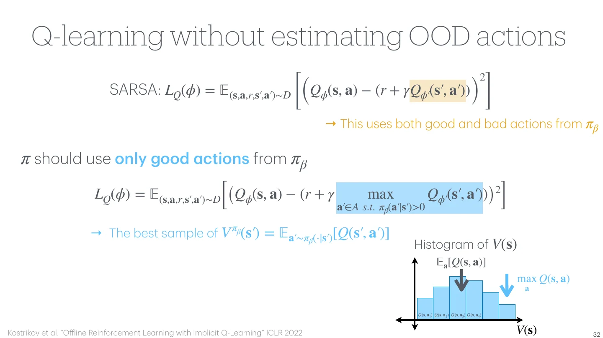<span class="zoom-hint">확대해서 보기 ↗</span></button><figcaption>슬라이드 32</figcaption></figure><div class="explanation"><div class="slide-reading"><p class="reading-kicker">IQL과 expectile 회귀 · 슬라이드 32</p><p>학습 데이터에 없는 행동의 Q값은 직접 검증할 수 없지만 max 연산은 그중 낙관적인 값을 선택할 수 있습니다. bootstrap이 반복되며 그 오류가 전파됩니다.</p><details><summary>개념 전개 펼치기</summary><p>SARSA식 target은 데이터에 저장된 다음 행동을 사용해 greedy OOD 행동을 평가하지 않는다. IQL의 expectile 손실은 잔차 <span class="math-inline">\(u=Q-V\)</span>의 부호에 따라 <span class="math-inline">\(	au u^2\)</span> 또는 <span class="math-inline">\((1-	au)u^2\)</span>를 적용한다. <span class="math-inline">\(	au&gt;0.5\)</span>면 높은 Q 표본이 V를 위쪽으로 끌어올리고, advantage weight가 큰 데이터 행동을 정책이 더 잘 모방한다.</p>
</details></div></div></div></section><section class="slide" id="s33"><div class="slide-heading"><span class="slide-index">06 / 33</span><h2>Value function with best actions</h2></div><div class="slide-grid"><figure class="slide-figure"><button class="slide-image-button" data-zoom-src="../assets/slides/06_offline_rl/33.webp" data-zoom-label="06장 슬라이드 33">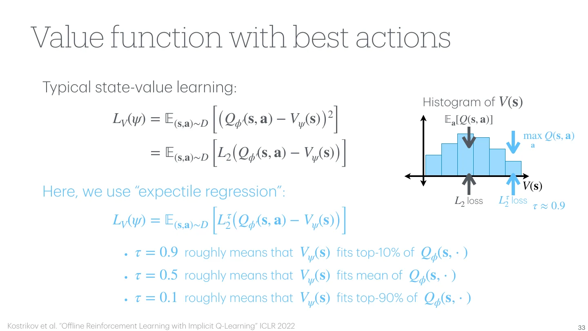<span class="zoom-hint">확대해서 보기 ↗</span></button><figcaption>슬라이드 33</figcaption></figure><div class="explanation"><div class="slide-reading"><p class="reading-kicker">IQL과 expectile 회귀 · 슬라이드 33</p><p>이 페이지에서 평가하는 대상이 상태가치 V인지 행동가치 Q인지 먼저 구분합니다. 평균 정책 행동과 최적 행동의 연산도 서로 바꾸어 쓰지 않습니다.</p><details><summary>개념 전개 펼치기</summary><p>SARSA식 target은 데이터에 저장된 다음 행동을 사용해 greedy OOD 행동을 평가하지 않는다. IQL의 expectile 손실은 잔차 <span class="math-inline">\(u=Q-V\)</span>의 부호에 따라 <span class="math-inline">\(	au u^2\)</span> 또는 <span class="math-inline">\((1-	au)u^2\)</span>를 적용한다. <span class="math-inline">\(	au&gt;0.5\)</span>면 높은 Q 표본이 V를 위쪽으로 끌어올리고, advantage weight가 큰 데이터 행동을 정책이 더 잘 모방한다.</p>
</details></div></div></div></section><section class="slide" id="s34"><div class="slide-heading"><span class="slide-index">06 / 34</span><h2>Expectile regression</h2></div><div class="slide-grid"><figure class="slide-figure"><button class="slide-image-button" data-zoom-src="../assets/slides/06_offline_rl/34.webp" data-zoom-label="06장 슬라이드 34">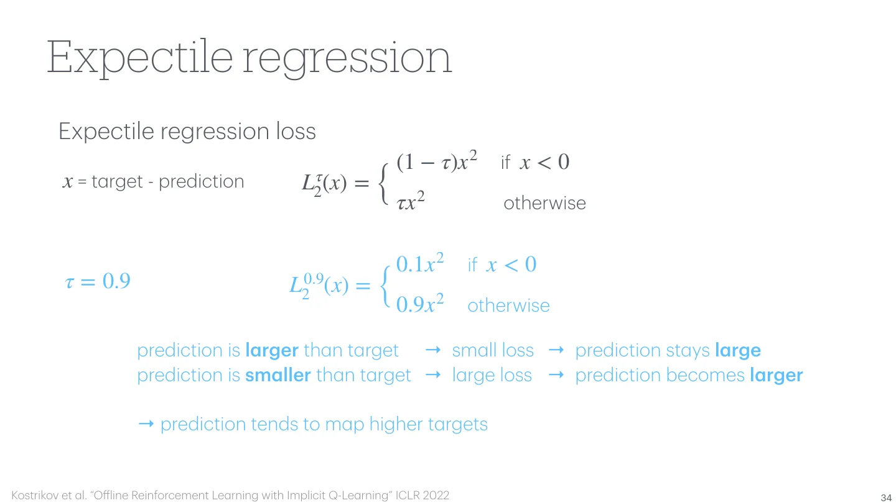<span class="zoom-hint">확대해서 보기 ↗</span></button><figcaption>슬라이드 34</figcaption></figure><div class="explanation"><div class="slide-reading"><p class="reading-kicker">IQL과 expectile 회귀 · 슬라이드 34</p><p>expectile 회귀는 양·음 잔차를 다르게 가중합니다. τ가 0.5보다 크면 Q 분포 상단의 행동이 상태가치 V를 더 크게 끌어올립니다.</p><details><summary>개념 전개 펼치기</summary><p>SARSA식 target은 데이터에 저장된 다음 행동을 사용해 greedy OOD 행동을 평가하지 않는다. IQL의 expectile 손실은 잔차 <span class="math-inline">\(u=Q-V\)</span>의 부호에 따라 <span class="math-inline">\(	au u^2\)</span> 또는 <span class="math-inline">\((1-	au)u^2\)</span>를 적용한다. <span class="math-inline">\(	au&gt;0.5\)</span>면 높은 Q 표본이 V를 위쪽으로 끌어올리고, advantage weight가 큰 데이터 행동을 정책이 더 잘 모방한다.</p>
</details></div></div></div></section><section class="slide" id="s35"><div class="slide-heading"><span class="slide-index">06 / 35</span><h2>Implicit Q-Learning (IQL)</h2></div><div class="slide-grid"><figure class="slide-figure"><button class="slide-image-button" data-zoom-src="../assets/slides/06_offline_rl/35.webp" data-zoom-label="06장 슬라이드 35">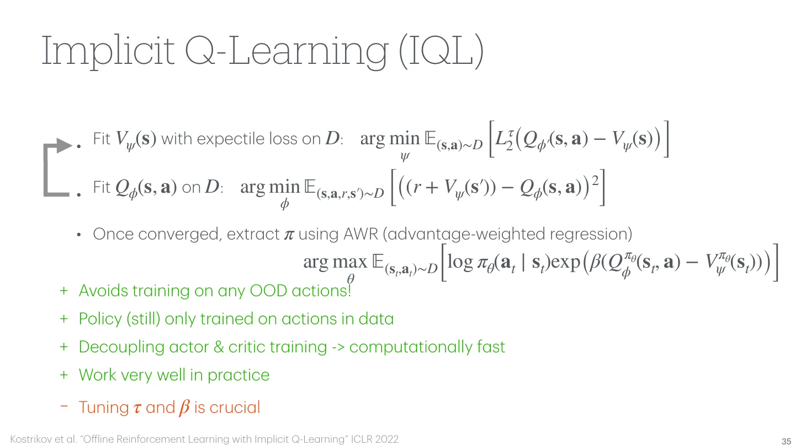<span class="zoom-hint">확대해서 보기 ↗</span></button><figcaption>슬라이드 35</figcaption></figure><div class="explanation"><div class="slide-reading"><p class="reading-kicker">IQL과 expectile 회귀 · 슬라이드 35</p><p>IQL은 학습 중 데이터 밖 행동에 Q를 질의하지 않습니다. expectile V 학습, 데이터 전이의 Q bootstrapping, advantage 가중 BC 순서를 확인합니다.</p><details><summary>개념 전개 펼치기</summary><p>SARSA식 target은 데이터에 저장된 다음 행동을 사용해 greedy OOD 행동을 평가하지 않는다. IQL의 expectile 손실은 잔차 <span class="math-inline">\(u=Q-V\)</span>의 부호에 따라 <span class="math-inline">\(	au u^2\)</span> 또는 <span class="math-inline">\((1-	au)u^2\)</span>를 적용한다. <span class="math-inline">\(	au&gt;0.5\)</span>면 높은 Q 표본이 V를 위쪽으로 끌어올리고, advantage weight가 큰 데이터 행동을 정책이 더 잘 모방한다.</p>
</details></div></div></div></section><section class="slide" id="s36"><div class="slide-heading"><span class="slide-index">06 / 36</span><h2>Offline RL applications</h2></div><div class="slide-grid"><figure class="slide-figure"><button class="slide-image-button" data-zoom-src="../assets/slides/06_offline_rl/36.webp" data-zoom-label="06장 슬라이드 36">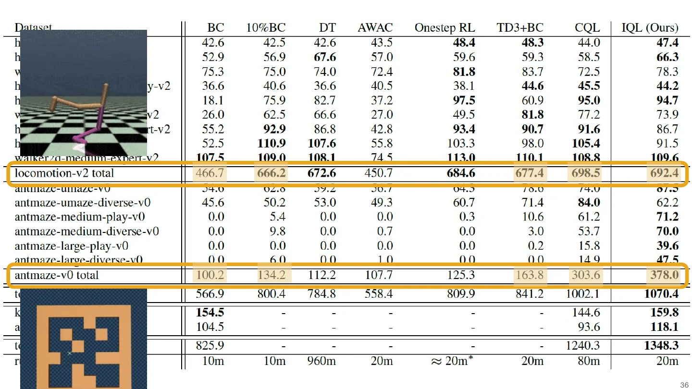<span class="zoom-hint">확대해서 보기 ↗</span></button><figcaption>슬라이드 36</figcaption></figure><div class="explanation"><div class="slide-reading"><p class="reading-kicker">적용 분야와 핵심 정리 · 슬라이드 36</p><p>슬라이드의 정의와 그림을 바로 앞·뒤 페이지의 식과 연결합니다. 기호의 조건부 대상, 학습 데이터가 온 정책, 그리고 업데이트에서 고정된 값이 무엇인지 표시해 보세요.</p><details><summary>개념 전개 펼치기</summary><p>로봇 사전학습, 핵융합·냉각 제어, 칩 설계처럼 온라인 탐색 비용이 큰 분야가 동기다. 하지만 정적 데이터 밖에서 정책을 시험할 수 없다면 실제 개선 여부를 보장하기 어렵다. 안전한 shadow evaluation, 보수적 배포, 제한된 online fine-tuning을 포함한 검증 설계가 필요하다.</p>
</details></div></div></div></section><section class="slide" id="s37"><div class="slide-heading"><span class="slide-index">06 / 37</span><h2>Where to use offline RL?</h2></div><div class="slide-grid"><figure class="slide-figure"><button class="slide-image-button" data-zoom-src="../assets/slides/06_offline_rl/37.webp" data-zoom-label="06장 슬라이드 37">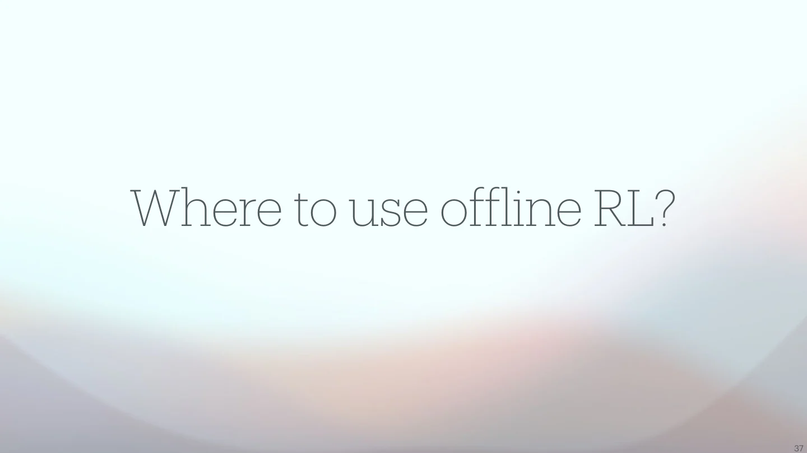<span class="zoom-hint">확대해서 보기 ↗</span></button><figcaption>슬라이드 37</figcaption></figure><div class="explanation"><div class="slide-reading"><p class="reading-kicker">적용 분야와 핵심 정리 · 슬라이드 37</p><p>실제 적용은 새 상호작용 비용이 큰 문제에서 동기화됩니다. 정적 데이터 범위 밖의 안전·성능은 별도의 제한된 실물 검증이 필요합니다.</p><details><summary>개념 전개 펼치기</summary><p>로봇 사전학습, 핵융합·냉각 제어, 칩 설계처럼 온라인 탐색 비용이 큰 분야가 동기다. 하지만 정적 데이터 밖에서 정책을 시험할 수 없다면 실제 개선 여부를 보장하기 어렵다. 안전한 shadow evaluation, 보수적 배포, 제한된 online fine-tuning을 포함한 검증 설계가 필요하다.</p>
</details></div></div></div></section><section class="slide" id="s38"><div class="slide-heading"><span class="slide-index">06 / 38</span><h2>Pre-training for robots</h2></div><div class="slide-grid"><figure class="slide-figure"><button class="slide-image-button" data-zoom-src="../assets/slides/06_offline_rl/38.webp" data-zoom-label="06장 슬라이드 38"><span class="zoom-hint">확대해서 보기 ↗</span></button><figcaption>슬라이드 38</figcaption></figure><div class="explanation"><div class="slide-reading"><p class="reading-kicker">적용 분야와 핵심 정리 · 슬라이드 38</p><p>실제 적용은 새 상호작용 비용이 큰 문제에서 동기화됩니다. 정적 데이터 범위 밖의 안전·성능은 별도의 제한된 실물 검증이 필요합니다.</p><details><summary>개념 전개 펼치기</summary><p>로봇 사전학습, 핵융합·냉각 제어, 칩 설계처럼 온라인 탐색 비용이 큰 분야가 동기다. 하지만 정적 데이터 밖에서 정책을 시험할 수 없다면 실제 개선 여부를 보장하기 어렵다. 안전한 shadow evaluation, 보수적 배포, 제한된 online fine-tuning을 포함한 검증 설계가 필요하다.</p>
</details></div></div></div></section><section class="slide" id="s39"><div class="slide-heading"><span class="slide-index">06 / 39</span><h2>Nuclear fusion</h2></div><div class="slide-grid"><figure class="slide-figure"><button class="slide-image-button" data-zoom-src="../assets/slides/06_offline_rl/39.webp" data-zoom-label="06장 슬라이드 39"><span class="zoom-hint">확대해서 보기 ↗</span></button><figcaption>슬라이드 39</figcaption></figure><div class="explanation"><div class="slide-reading"><p class="reading-kicker">적용 분야와 핵심 정리 · 슬라이드 39</p><p>실제 적용은 새 상호작용 비용이 큰 문제에서 동기화됩니다. 정적 데이터 범위 밖의 안전·성능은 별도의 제한된 실물 검증이 필요합니다.</p><details><summary>개념 전개 펼치기</summary><p>로봇 사전학습, 핵융합·냉각 제어, 칩 설계처럼 온라인 탐색 비용이 큰 분야가 동기다. 하지만 정적 데이터 밖에서 정책을 시험할 수 없다면 실제 개선 여부를 보장하기 어렵다. 안전한 shadow evaluation, 보수적 배포, 제한된 online fine-tuning을 포함한 검증 설계가 필요하다.</p>
</details></div></div></div></section><section class="slide" id="s40"><div class="slide-heading"><span class="slide-index">06 / 40</span><h2>Cooling system</h2></div><div class="slide-grid"><figure class="slide-figure"><button class="slide-image-button" data-zoom-src="../assets/slides/06_offline_rl/40.webp" data-zoom-label="06장 슬라이드 40">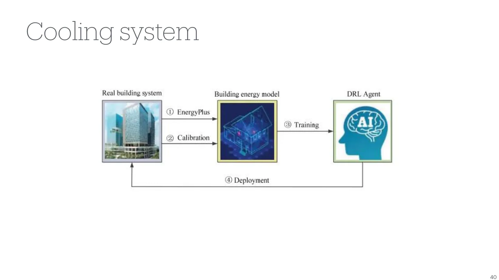<span class="zoom-hint">확대해서 보기 ↗</span></button><figcaption>슬라이드 40</figcaption></figure><div class="explanation"><div class="slide-reading"><p class="reading-kicker">적용 분야와 핵심 정리 · 슬라이드 40</p><p>실제 적용은 새 상호작용 비용이 큰 문제에서 동기화됩니다. 정적 데이터 범위 밖의 안전·성능은 별도의 제한된 실물 검증이 필요합니다.</p><details><summary>개념 전개 펼치기</summary><p>로봇 사전학습, 핵융합·냉각 제어, 칩 설계처럼 온라인 탐색 비용이 큰 분야가 동기다. 하지만 정적 데이터 밖에서 정책을 시험할 수 없다면 실제 개선 여부를 보장하기 어렵다. 안전한 shadow evaluation, 보수적 배포, 제한된 online fine-tuning을 포함한 검증 설계가 필요하다.</p>
</details></div></div></div></section><section class="slide" id="s41"><div class="slide-heading"><span class="slide-index">06 / 41</span><h2>Chip design</h2></div><div class="slide-grid"><figure class="slide-figure"><button class="slide-image-button" data-zoom-src="../assets/slides/06_offline_rl/41.webp" data-zoom-label="06장 슬라이드 41">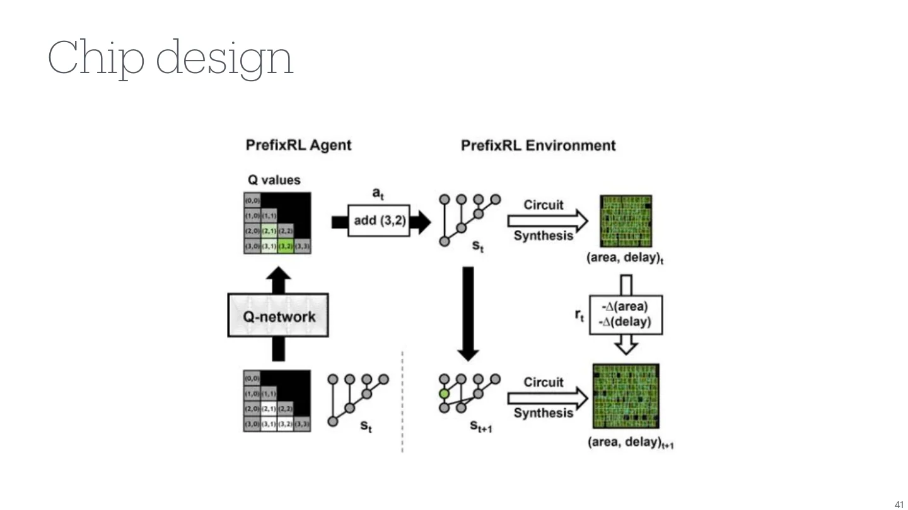<span class="zoom-hint">확대해서 보기 ↗</span></button><figcaption>슬라이드 41</figcaption></figure><div class="explanation"><div class="slide-reading"><p class="reading-kicker">적용 분야와 핵심 정리 · 슬라이드 41</p><p>실제 적용은 새 상호작용 비용이 큰 문제에서 동기화됩니다. 정적 데이터 범위 밖의 안전·성능은 별도의 제한된 실물 검증이 필요합니다.</p><details><summary>개념 전개 펼치기</summary><p>로봇 사전학습, 핵융합·냉각 제어, 칩 설계처럼 온라인 탐색 비용이 큰 분야가 동기다. 하지만 정적 데이터 밖에서 정책을 시험할 수 없다면 실제 개선 여부를 보장하기 어렵다. 안전한 shadow evaluation, 보수적 배포, 제한된 online fine-tuning을 포함한 검증 설계가 필요하다.</p>
</details></div></div></div></section><section class="slide" id="s42"><div class="slide-heading"><span class="slide-index">06 / 42</span><h2>Summary</h2></div><div class="slide-grid"><figure class="slide-figure"><button class="slide-image-button" data-zoom-src="../assets/slides/06_offline_rl/42.webp" data-zoom-label="06장 슬라이드 42">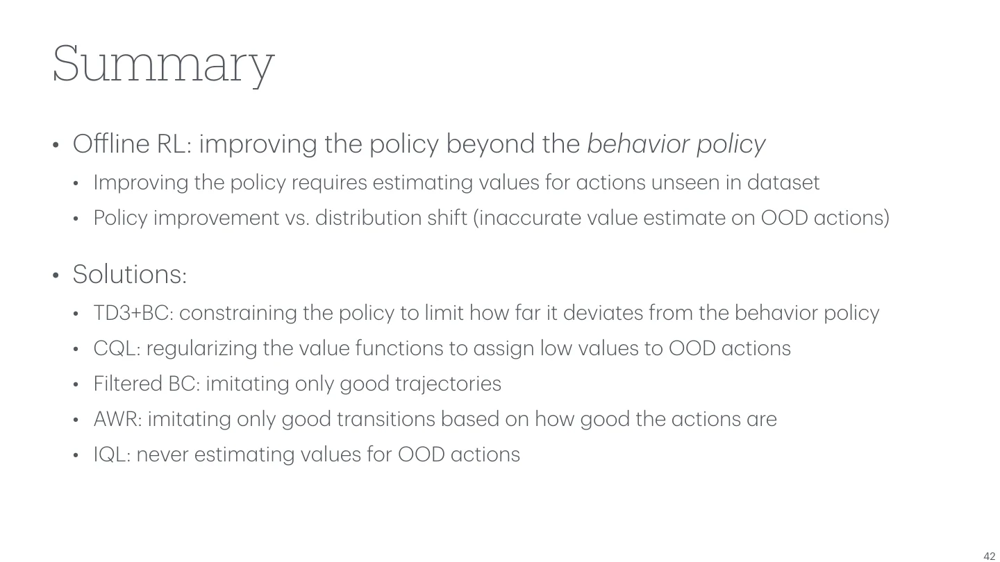<span class="zoom-hint">확대해서 보기 ↗</span></button><figcaption>슬라이드 42</figcaption></figure><div class="explanation"><div class="slide-reading"><p class="reading-kicker">적용 분야와 핵심 정리 · 슬라이드 42</p><p>요약의 항목을 정의·목적함수·데이터 요구량·주요 실패 원인으로 나누어 정리합니다. 이름이 비슷한 알고리즘의 차이는 이 네 축에서 드러납니다.</p><details><summary>개념 전개 펼치기</summary><p>로봇 사전학습, 핵융합·냉각 제어, 칩 설계처럼 온라인 탐색 비용이 큰 분야가 동기다. 하지만 정적 데이터 밖에서 정책을 시험할 수 없다면 실제 개선 여부를 보장하기 어렵다. 안전한 shadow evaluation, 보수적 배포, 제한된 online fine-tuning을 포함한 검증 설계가 필요하다.</p>
</details></div></div></div></section><nav class="chapter-pager"><a href="05-2.html"><small>이전 장</small><strong>← RL 실험과 벤치마크</strong></a><span></span></nav><footer class="site-footer">Deep Reinforcement Learning · 2026-2</footer></main></div><dialog id="slide-dialog" class="slide-dialog"><button data-dialog-close>×</button><p></p></dialog><dialog id="search-dialog" class="search-dialog"><div class="search-panel"><div class="search-input-row"><input type="search" id="search-input" placeholder="개념, 알고리즘, 수식 검색"><button data-search-close>×</button></div><div id="search-results"></div><p class="search-hint">슬라이드 제목과 설명을 함께 검색합니다. Esc로 닫기</p></div></dialog><script src="../assets/search-index.js"></script><script src="../assets/site.js"></script></body></html>